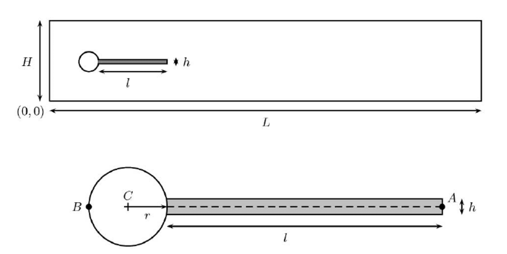
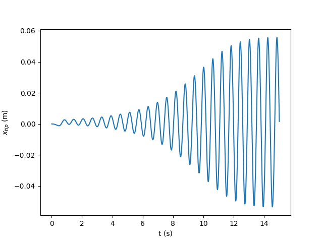
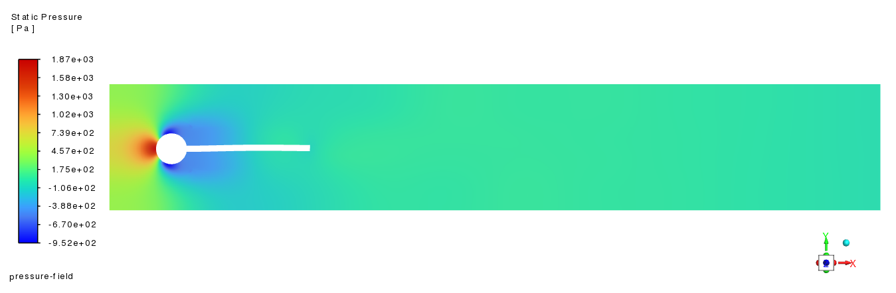
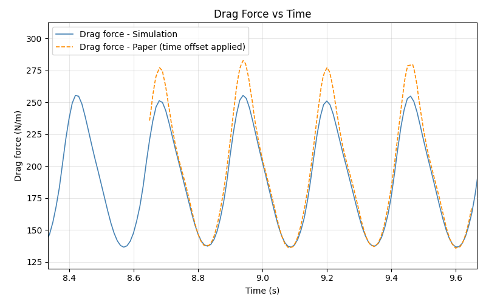
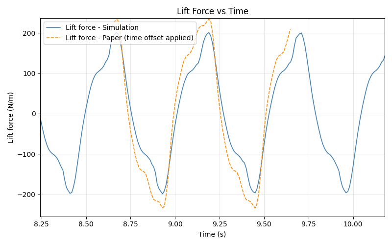
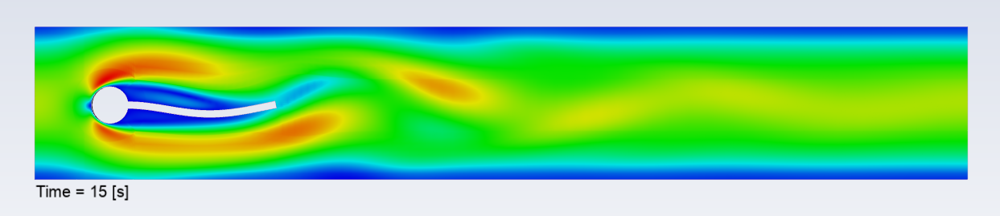
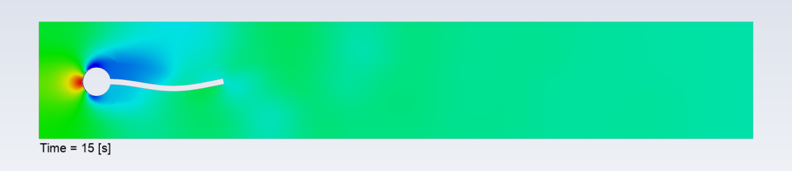

Note
Go to the end to download the full example code.
Turek-Hron FSI2 Benchmark Example#
This example is a version of the Turek-Hron FSI2 case that is often used as a benchmark case for System Coupling. This two-way, fluid-structure interaction (FSI) case is based on co-simulation of a transient oscillating beam with surface data transfers.
Ansys Mechanical APDL (MAPDL) is used to perform a transient structural analysis.
Ansys Fluent is used to perform a transient fluid-flow analysis.
System Coupling coordinates the coupled solution involving the above products to solve the multiphysics problem via co-simulation.
Problem description
An elastic beam structure is attached to a rigid cylinder. The system resides within a fluid filled channel:
{kind=link}

The flow is laminar with a Reynolds number of \(Re = 100\). The inlet velocity has a parabolic profile with a maximum value of \(1.5 \cdot \bar{U}\), where \(\bar{U}\) is the average inlet velocity. The cylinder sits at an offset of \(0.05~m\) to the incoming flow, causing an imbalance of surface forces on the elastic beam. The beam and the surrounding fluid are simulated for a few time steps to allow an examination of the motion of the beam as it starts vibrating due to vortices shedded by the rigid cylinder.
Import modules, download files, launch products#
Setting up this example consists of performing imports, downloading the input file, and launching the required products.
Perform required imports#
Import ansys-systemcoupling-core, ansys-fluent-core and
ansys-mapdl-core and other required packages.
import ansys.fluent.core as pyfluent
import ansys.mapdl.core as pymapdl
import matplotlib.pyplot as plt
import numpy as np
import ansys.systemcoupling.core as pysyc
from ansys.systemcoupling.core import examples
Download the input files#
This example uses two pre-created files - a Fluent mesh file that contains the fluid mesh and named zones, and a MAPDL CDB file containing the structural mesh.
fluent_msh_file = examples.download_file(
"fluent-fsi2.msh.h5", "pysystem-coupling/turek-horn-benchmark"
)
mapdl_cdb_file = examples.download_file(
"turek_hron_benchmark_solid.cdb", "pysystem-coupling/turek-horn-benchmark"
)
drag_data_file = examples.download_file(
"drag_data.csv", "pysystem-coupling/turek-horn-benchmark"
)
lift_data_file = examples.download_file(
"lift_data.csv", "pysystem-coupling/turek-horn-benchmark"
)
Launch products#
Launch instances of the Mechanical APDL, Fluent, and System Coupling and return client (session) objects that allow you to interact with these products via APIs exposed into the current Python environment.
mapdl = pymapdl.launch_mapdl()
fluent = pyfluent.launch_fluent(processor_count=8)
syc = pysyc.launch(start_output=True, nprocs=10, sycnprocs=2)
/opt/hostedtoolcache/Python/3.13.12/x64/lib/python3.13/site-packages/ansys/tools/common/cyberchannel.py:188: UserWarning: Starting gRPC client without TLS on 127.0.0.1:50053. This is INSECURE. Consider using a secure connection.
warn(f"Starting gRPC client without TLS on {target}. This is INSECURE. Consider using a secure connection.")
/opt/hostedtoolcache/Python/3.13.12/x64/lib/python3.13/site-packages/ansys/tools/common/cyberchannel.py:188: UserWarning: Starting gRPC client without TLS on 127.0.0.1:52355. This is INSECURE. Consider using a secure connection.
warn(f"Starting gRPC client without TLS on {target}. This is INSECURE. Consider using a secure connection.")
Setup Mechanical APDL, Fluent, and System Coupling analyses#
The setup consists of setting up the structural analysis, the fluids analysis, and the coupled analysis.
Define constants#
CYLINDER_DIA = 0.1 # Diameter of the cylinder
RE = 100 # Reynolds number
U_BAR = 1.0 # Average velocity
FLUID_DENS = 1000 # Fluid density
SOLID_DENS = 10000 # Solid density
NU = 0.4 # Poisson's ratio
E = 1.4e6 # Young's modulus
viscosity = 1 # Kinematic viscosity
Clear cache#
mapdl.clear()
Enter Mechanical APDL setup#
mapdl.prep7()
*****MAPDL VERIFICATION RUN ONLY*****
DO NOT USE RESULTS FOR PRODUCTION
***** MAPDL ANALYSIS DEFINITION (PREP7) *****
Read the CDB file#
mapdl.cdread(option="DB", fname=mapdl_cdb_file)
Define material properties#
mapdl.mp("DENS", 1, SOLID_DENS) # density
mapdl.mp("EX", 1, E) # Young's modulus
mapdl.mp("NUXY", 1, NU) # Poisson's ratio
MATERIAL 1 NUXY = 0.4000000
Mechanical solver setup#
mapdl.slashsolu()
mapdl.antype(4)
mapdl.nlgeom("on")
mapdl.kbc(1)
mapdl.eqslv("sparse")
mapdl.run("rstsuppress,none") # don't suppress anything due to presence of FSI loading
mapdl.dmpoption("emat", "no")
mapdl.dmpoption("esav", "no")
mapdl.cmwrite() # Export components due to presence of FSI loading
mapdl.trnopt(tintopt="hht")
mapdl.tintp(0.1) # Numerical damping for HHT time integration
mapdl.nldiag("cont", "iter")
mapdl.scopt("NO")
mapdl.autots("on") # Automatic time stepping
mapdl.nsubst(1, 1, 1, "OFF")
mapdl.time(35.0) # Max time; controlled by System Coupling
mapdl.timint("on")
mapdl.outres("all", "all")
WRITE ALL ITEMS TO THE DATABASE WITH A FREQUENCY OF ALL
FOR ALL APPLICABLE ENTITIES
Set up the fluid analysis#
Read the pre-created mesh file
fluent.file.read(file_type="mesh", file_name=fluent_msh_file)
fluent.mesh.check()
/opt/hostedtoolcache/Python/3.13.12/x64/lib/python3.13/site-packages/ansys/fluent/core/session_solver.py:355: DeprecatedSettingWarning: 'file' is deprecated. Use 'settings.file' instead.
warnings.warn(
Fast-loading "/ansys_inc/v252/fluent/fluent25.2.0/addons/afd/lib/hdfio.bin"
Done.
Reading from 06ee185caae5:"/home/container/workdir/fluent-fsi2.msh.h5" in NODE0 mode ...
Reading mesh ...
9932 cells, 1 cell zone ...
9932 hexahedral cells, zone id: 16
39987 faces, 8 face zones ...
9932 quadrilateral symmetry faces, zone id: 27
9932 quadrilateral symmetry faces, zone id: 26
118 quadrilateral wall faces, zone id: 25
116 quadrilateral wall faces, zone id: 22
70 quadrilateral pressure-outlet faces, zone id: 21
144 quadrilateral wall faces, zone id: 19
70 quadrilateral velocity-inlet faces, zone id: 18
19605 quadrilateral interior faces, zone id: 17
20382 nodes, 1 node zone ...
Building...
mesh
auto partitioning mesh by Metis (fast),
distributing mesh
parts........,
faces........,
nodes........,
cells........,
bandwidth reduction using Reverse Cuthill-McKee: 1172/34 = 34.4706
materials,
interface,
domains,
zones,
back
front
fsi
cylinder
outlet
channel
inlet
int_fluid
fluid
parallel,
Done.
/opt/hostedtoolcache/Python/3.13.12/x64/lib/python3.13/site-packages/ansys/fluent/core/session_solver.py:355: DeprecatedSettingWarning: 'mesh' is deprecated. Use 'settings.mesh' instead.
warnings.warn(
Domain Extents:
x-coordinate: min (m) = -1.253609e-18, max (m) = 2.500000e+00
y-coordinate: min (m) = 0.000000e+00, max (m) = 4.100000e-01
z-coordinate: min (m) = 0.000000e+00, max (m) = 1.000000e-02
Volume statistics:
minimum volume (m3): 6.133287e-10
maximum volume (m3): 1.257038e-05
total volume (m3): 1.010145e-02
Face area statistics:
minimum face area (m2): 6.133288e-08
maximum face area (m2): 1.709870e-03
Checking mesh.....................................
Done.
Define fluids general solver settings#
fluent.setup.general.solver.type = "pressure-based"
fluent.solution.methods.high_order_term_relaxation.enable = True
/opt/hostedtoolcache/Python/3.13.12/x64/lib/python3.13/site-packages/ansys/fluent/core/session_solver.py:355: DeprecatedSettingWarning: 'setup' is deprecated. Use 'settings.setup' instead.
warnings.warn(
/opt/hostedtoolcache/Python/3.13.12/x64/lib/python3.13/site-packages/ansys/fluent/core/session_solver.py:355: DeprecatedSettingWarning: 'solution' is deprecated. Use 'settings.solution' instead.
warnings.warn(
Define the fluid and update the material properties#
fluent.setup.models.viscous.model = "laminar"
fluent.setup.materials.fluid["fsi_fluid"] = {
"density": {"option": "constant", "value": FLUID_DENS},
"viscosity": {"option": "constant", "value": viscosity},
}
fluent.setup.cell_zone_conditions.fluid["*fluid*"].general.material = "fsi_fluid"
fluent.setup.materials.print_state()
database :
database_type : fluent-database
fluid :
air :
name : air
chemical_formula :
density :
option : value
value : 1.225
viscosity :
option : value
value : 1.7894e-05
fsi_fluid :
name : fsi_fluid
chemical_formula :
density :
option : value
value : 1000
viscosity :
option : value
value : 1
solid :
aluminum :
name : aluminum
chemical_formula : al
density :
option : value
value : 2719
Create the parabolic inlet profile as a named expression#
fluent.setup.named_expressions["u_bar"] = { # average velocity
"definition": f"{U_BAR} [m/s]"
}
fluent.setup.named_expressions["t_bar"] = {"definition": "1.0 [s]"}
fluent.setup.named_expressions["y_bar"] = {"definition": "1.0 [m]"}
fluent.setup.named_expressions["u_y"] = {
"definition": "1.5*u_bar*(4*(y/y_bar)*(0.41 - y/y_bar)/(0.41^2))"
}
Update the inlet field#
inlet_fluid = fluent.setup.boundary_conditions.velocity_inlet["inlet"]
inlet_fluid.momentum.initial_gauge_pressure.value = 0
inlet_fluid.momentum.velocity.value = "u_y"
fluent.setup.named_expressions.print_state()
/opt/hostedtoolcache/Python/3.13.12/x64/lib/python3.13/site-packages/ansys/fluent/core/solver/flobject.py:728: DeprecatedSettingWarning: A newer syntax is available to perform the last operation:
solver.settings.setup.boundary_conditions.velocity_inlet['inlet'].momentum.velocity_magnitude.value = 'u_y'
warnings.warn(
t_bar :
name : t_bar
definition : 1.0 [s]
description :
parameterid :
parametername :
unit : s
input_parameter : False
output_parameter : False
u_bar :
name : u_bar
definition : 1.0 [m/s]
description :
parameterid :
parametername :
unit : m s^-1
input_parameter : False
output_parameter : False
u_y :
name : u_y
definition : 1.5*u_bar*(4*(y/y_bar)*(0.41 - y/y_bar)/(0.41^2))
description :
parameterid :
parametername :
unit : m s^-1
input_parameter : False
output_parameter : False
y_bar :
name : y_bar
definition : 1.0 [m]
description :
parameterid :
parametername :
unit : m
input_parameter : False
output_parameter : False
Setup any relevant solution controls#
fluent.solution.methods.discretization_scheme = {
"mom": "second-order-upwind",
"pressure": "second-order",
}
/opt/hostedtoolcache/Python/3.13.12/x64/lib/python3.13/site-packages/ansys/fluent/core/solver/flobject.py:728: DeprecatedSettingWarning: A newer syntax is available to perform the last operation:
solver.settings.solution.methods.spatial_discretization.discretization_scheme = {'pressure' : 'second-order', 'mom' : 'second-order-upwind'}
warnings.warn(
Initialize the flow field & run a steady simulation#
First, a steady simulation is conducted to initialize the flow field with the parabolic inlet flow.
fluent.solution.initialization.hybrid_initialize()
fluent.solution.run_calculation.iterate(iter_count=500)
Initialize using the hybrid initialization method.
Checking case topology...
-This case has both inlets & outlets
-Pressure information is not available at the boundaries.
Case will be initialized with constant pressure
iter scalar-0
1 1.000000e+00
2 1.519825e-05
3 3.516171e-06
4 1.762099e-06
5 9.181926e-07
6 5.488642e-07
7 3.287633e-07
8 2.044025e-07
9 1.272299e-07
10 8.015062e-08
Hybrid initialization is done.
iter continuity x-velocity y-velocity z-velocity time/iter
1 1.0000e+00 9.9442e-03 1.3206e-03 0.0000e+00 0:00:22 499
2 6.8254e-01 6.3022e-03 8.1260e-04 0.0000e+00 0:01:07 498
3 6.5271e-01 3.8859e-03 4.9865e-04 0.0000e+00 0:00:59 497
4 5.4508e-01 2.4003e-03 3.0543e-04 0.0000e+00 0:00:52 496
5 4.2766e-01 1.5329e-03 1.9267e-04 0.0000e+00 0:00:47 495
6 3.3839e-01 1.0239e-03 1.2774e-04 2.6268e-17 0:00:43 494
7 2.9054e-01 7.2214e-04 8.9403e-05 1.5981e-17 0:00:40 493
8 2.6675e-01 5.4114e-04 6.6214e-05 1.0383e-17 0:00:38 492
9 2.4913e-01 4.2861e-04 5.1837e-05 7.0835e-18 0:00:36 491
10 2.3191e-01 3.5628e-04 4.2764e-05 5.0865e-18 0:00:35 490
11 2.1456e-01 3.0757e-04 3.6793e-05 3.7735e-18 0:00:34 489
iter continuity x-velocity y-velocity z-velocity time/iter
12 1.9729e-01 2.7395e-04 3.2717e-05 2.8679e-18 0:00:33 488
13 1.8562e-01 2.4967e-04 2.9729e-05 2.2301e-18 0:00:32 487
14 1.7364e-01 2.3051e-04 2.7477e-05 1.8084e-18 0:00:31 486
15 1.6283e-01 2.1488e-04 2.5762e-05 1.4604e-18 0:00:30 485
16 1.5464e-01 2.0196e-04 2.4467e-05 1.1443e-18 0:00:29 484
17 1.4678e-01 1.9074e-04 2.3362e-05 9.2079e-19 0:00:29 483
18 1.4014e-01 1.8053e-04 2.2520e-05 7.7584e-19 0:00:28 482
19 1.3352e-01 1.7099e-04 2.1634e-05 6.3911e-19 0:00:28 481
20 1.2689e-01 1.6221e-04 2.1033e-05 5.2783e-19 0:00:28 480
21 1.2108e-01 1.5397e-04 2.0366e-05 4.5062e-19 0:00:27 479
22 1.1527e-01 1.4610e-04 1.9843e-05 3.8504e-19 0:00:27 478
iter continuity x-velocity y-velocity z-velocity time/iter
23 1.0941e-01 1.3859e-04 1.9251e-05 3.4410e-19 0:00:27 477
24 1.0303e-01 1.3144e-04 1.8633e-05 2.9636e-19 0:00:27 476
25 9.8192e-02 1.2465e-04 1.8072e-05 2.6384e-19 0:00:27 475
26 9.1868e-02 1.1821e-04 1.7415e-05 2.4442e-19 0:00:26 474
27 8.7164e-02 1.1205e-04 1.6749e-05 2.4044e-19 0:00:26 473
28 8.1639e-02 1.0629e-04 1.6147e-05 1.9872e-19 0:00:26 472
29 7.6198e-02 1.0081e-04 1.5446e-05 1.9319e-19 0:00:26 471
30 7.0884e-02 9.5719e-05 1.4773e-05 1.8314e-19 0:00:26 470
31 6.6536e-02 9.0849e-05 1.4114e-05 1.7586e-19 0:00:25 469
32 6.2426e-02 8.6205e-05 1.3427e-05 1.7451e-19 0:00:25 468
33 5.8832e-02 8.1828e-05 1.2750e-05 1.5638e-19 0:00:25 467
iter continuity x-velocity y-velocity z-velocity time/iter
34 5.5629e-02 7.7635e-05 1.2105e-05 1.5104e-19 0:00:25 466
35 5.1851e-02 7.3685e-05 1.1453e-05 1.3842e-19 0:00:25 465
36 4.8524e-02 6.9950e-05 1.0814e-05 1.4381e-19 0:00:25 464
37 4.5838e-02 6.6416e-05 1.0215e-05 1.3629e-19 0:00:25 463
38 4.2355e-02 6.3099e-05 9.6504e-06 1.3064e-19 0:00:25 462
39 3.9133e-02 5.9995e-05 9.0985e-06 1.3068e-19 0:00:25 461
40 3.6610e-02 5.7070e-05 8.5649e-06 1.2896e-19 0:00:25 460
41 3.4397e-02 5.4293e-05 8.0904e-06 1.2373e-19 0:00:25 459
42 3.1211e-02 5.1648e-05 7.6423e-06 1.1993e-19 0:00:25 458
43 2.9108e-02 4.9174e-05 7.2105e-06 1.1570e-19 0:00:25 457
44 2.7308e-02 4.6913e-05 6.8201e-06 1.1504e-19 0:00:24 456
iter continuity x-velocity y-velocity z-velocity time/iter
45 2.5307e-02 4.4752e-05 6.4516e-06 1.1379e-19 0:00:24 455
46 2.3332e-02 4.2701e-05 6.1089e-06 1.1604e-19 0:00:24 454
47 2.1315e-02 4.0824e-05 5.8057e-06 1.1029e-19 0:00:27 453
48 1.9728e-02 3.9038e-05 5.5175e-06 1.0983e-19 0:00:26 452
49 1.8510e-02 3.7344e-05 5.2447e-06 1.0919e-19 0:00:26 451
50 1.7264e-02 3.5769e-05 4.9929e-06 1.0955e-19 0:00:26 450
51 1.6751e-02 3.4298e-05 4.7567e-06 1.1861e-19 0:00:25 449
52 1.5762e-02 3.2905e-05 4.5359e-06 1.1401e-19 0:00:25 448
53 1.4709e-02 3.1604e-05 4.3237e-06 1.1763e-19 0:00:25 447
54 1.4004e-02 3.0369e-05 4.1112e-06 1.1354e-19 0:00:25 446
55 1.3175e-02 2.9207e-05 3.9222e-06 1.1315e-19 0:00:24 445
iter continuity x-velocity y-velocity z-velocity time/iter
56 1.2697e-02 2.8121e-05 3.7429e-06 1.0995e-19 0:00:24 444
57 1.2166e-02 2.7090e-05 3.5836e-06 1.0794e-19 0:00:24 443
58 1.1694e-02 2.6114e-05 3.4329e-06 1.0316e-19 0:00:24 442
59 1.1660e-02 2.5177e-05 3.2806e-06 1.0745e-19 0:00:24 441
60 1.1276e-02 2.4277e-05 3.1356e-06 1.0393e-19 0:00:24 440
61 1.1003e-02 2.3405e-05 2.9789e-06 1.0103e-19 0:00:23 439
62 1.1016e-02 2.2575e-05 2.8300e-06 1.0416e-19 0:00:23 438
63 1.0654e-02 2.1781e-05 2.6931e-06 1.0154e-19 0:00:23 437
64 1.0254e-02 2.1011e-05 2.5569e-06 1.0082e-19 0:00:24 436
65 1.0059e-02 2.0275e-05 2.4392e-06 1.0293e-19 0:00:23 435
66 1.0034e-02 1.9564e-05 2.3279e-06 9.9009e-20 0:00:23 434
iter continuity x-velocity y-velocity z-velocity time/iter
67 9.9771e-03 1.8867e-05 2.2277e-06 9.7717e-20 0:00:23 433
68 9.7698e-03 1.8202e-05 2.1303e-06 1.0246e-19 0:00:23 432
69 9.5490e-03 1.7564e-05 2.0350e-06 1.0755e-19 0:00:23 431
70 9.4108e-03 1.6914e-05 1.9366e-06 1.0391e-19 0:00:23 430
71 9.2554e-03 1.6306e-05 1.8368e-06 1.0746e-19 0:00:23 429
72 9.2850e-03 1.5722e-05 1.7577e-06 1.0220e-19 0:00:23 428
73 9.1415e-03 1.5139e-05 1.6885e-06 1.0401e-19 0:00:23 427
74 8.7338e-03 1.4546e-05 1.6266e-06 1.0281e-19 0:00:24 426
75 8.2889e-03 1.3995e-05 1.5723e-06 1.0016e-19 0:00:24 425
76 8.4823e-03 1.3432e-05 1.5183e-06 1.0228e-19 0:00:23 424
77 8.2775e-03 1.2856e-05 1.4654e-06 9.9897e-20 0:00:23 423
iter continuity x-velocity y-velocity z-velocity time/iter
78 7.9156e-03 1.2309e-05 1.4075e-06 1.0670e-19 0:00:23 422
79 7.9276e-03 1.1771e-05 1.3534e-06 1.0023e-19 0:00:23 421
80 7.7596e-03 1.1236e-05 1.3079e-06 1.0527e-19 0:00:23 420
81 7.5954e-03 1.0716e-05 1.2672e-06 1.0392e-19 0:00:23 419
82 7.2652e-03 1.0219e-05 1.2262e-06 1.0447e-19 0:00:24 418
83 6.6528e-03 9.7475e-06 1.1795e-06 1.0766e-19 0:00:23 417
84 6.3005e-03 9.2905e-06 1.1313e-06 1.0813e-19 0:00:23 416
85 6.1090e-03 8.8372e-06 1.0874e-06 1.0831e-19 0:00:23 415
86 5.7367e-03 8.3850e-06 1.0531e-06 1.0442e-19 0:00:23 414
87 5.3439e-03 7.9396e-06 1.0214e-06 1.0831e-19 0:00:23 413
88 5.2491e-03 7.5120e-06 9.8956e-07 1.0312e-19 0:00:23 412
iter continuity x-velocity y-velocity z-velocity time/iter
89 4.9084e-03 7.1075e-06 9.5350e-07 1.0821e-19 0:00:23 411
90 4.8513e-03 6.7230e-06 9.1374e-07 1.1232e-19 0:00:23 410
91 4.7815e-03 6.3581e-06 8.7147e-07 1.1473e-19 0:00:23 409
92 4.6696e-03 6.0022e-06 8.3028e-07 1.0920e-19 0:00:23 408
93 4.5260e-03 5.6538e-06 7.9748e-07 1.0618e-19 0:00:23 407
94 4.2169e-03 5.3213e-06 7.7558e-07 1.0297e-19 0:00:23 406
95 4.0859e-03 5.0078e-06 7.5289e-07 1.0128e-19 0:00:23 405
96 3.8827e-03 4.7001e-06 7.2634e-07 9.9499e-20 0:00:23 404
97 3.7208e-03 4.4129e-06 6.9581e-07 9.4750e-20 0:00:23 403
98 3.6037e-03 4.1495e-06 6.6184e-07 9.3445e-20 0:00:23 402
99 3.5090e-03 3.8989e-06 6.2592e-07 1.0218e-19 0:00:23 401
iter continuity x-velocity y-velocity z-velocity time/iter
100 3.3438e-03 3.6633e-06 5.9116e-07 9.7353e-20 0:00:23 400
101 3.2817e-03 3.4381e-06 5.6400e-07 9.6833e-20 0:00:23 399
102 3.1839e-03 3.2199e-06 5.4434e-07 9.6125e-20 0:00:23 398
103 3.0762e-03 3.0111e-06 5.2353e-07 9.9574e-20 0:00:23 397
104 2.9870e-03 2.8258e-06 5.0135e-07 1.0021e-19 0:00:23 396
105 2.9393e-03 2.6608e-06 4.7727e-07 1.0117e-19 0:00:22 395
106 2.8914e-03 2.5091e-06 4.5238e-07 1.0174e-19 0:00:22 394
107 2.8264e-03 2.3623e-06 4.2695e-07 1.0004e-19 0:00:22 393
108 2.7625e-03 2.2191e-06 4.0370e-07 9.8280e-20 0:00:22 392
109 2.7034e-03 2.0925e-06 3.8112e-07 1.0126e-19 0:00:22 391
110 2.5750e-03 1.9819e-06 3.6008e-07 1.0217e-19 0:00:22 390
iter continuity x-velocity y-velocity z-velocity time/iter
111 2.4920e-03 1.8926e-06 3.4275e-07 1.0090e-19 0:00:22 389
112 2.4187e-03 1.8079e-06 3.2472e-07 1.0105e-19 0:00:22 388
113 2.3210e-03 1.7240e-06 3.0640e-07 1.0018e-19 0:00:22 387
114 2.2171e-03 1.6426e-06 2.8860e-07 9.5763e-20 0:00:21 386
115 2.1436e-03 1.5625e-06 2.7224e-07 9.7655e-20 0:00:21 385
116 2.0656e-03 1.4838e-06 2.5609e-07 9.9462e-20 0:00:21 384
117 1.9470e-03 1.4098e-06 2.3979e-07 1.0281e-19 0:00:21 383
118 1.7918e-03 1.3393e-06 2.2475e-07 9.9169e-20 0:00:53 382
119 1.6944e-03 1.2695e-06 2.1385e-07 1.0303e-19 0:00:47 381
120 1.6191e-03 1.2066e-06 2.0279e-07 1.0313e-19 0:00:42 380
121 1.5371e-03 1.1508e-06 1.9097e-07 1.0254e-19 0:00:37 379
iter continuity x-velocity y-velocity z-velocity time/iter
122 1.4674e-03 1.0956e-06 1.7903e-07 9.9256e-20 0:00:34 378
123 1.3643e-03 1.0412e-06 1.6831e-07 9.8861e-20 0:00:32 377
124 1.2836e-03 9.8797e-07 1.5867e-07 9.9644e-20 0:00:29 376
125 1.1861e-03 9.3634e-07 1.5111e-07 9.9737e-20 0:00:28 375
126 1.1084e-03 8.8621e-07 1.4312e-07 9.4605e-20 0:00:26 374
127 1.0264e-03 8.3757e-07 1.3457e-07 1.0396e-19 0:00:25 373
128 9.6327e-04 7.9387e-07 1.2604e-07 1.0078e-19 0:00:24 372
! 128 solution is converged
Switch to transient mode and prepare for coupling#
fluent.setup.general.solver.time = "unsteady-2nd-order"
/opt/hostedtoolcache/Python/3.13.12/x64/lib/python3.13/site-packages/ansys/fluent/core/session_solver.py:355: DeprecatedSettingWarning: 'setup' is deprecated. Use 'settings.setup' instead.
warnings.warn(
Pressure-Velocity Coupling scheme is set to SIMPLE
Define dynamic meshing#
Define dynamic meshing for the FSI interface and symmetry planes.
Currently, dynamic_mesh is not exposed to the fluent root
session directly. We need to use the tui framework to create
dynamic zones.
fluent.tui.define.dynamic_mesh.dynamic_mesh("yes", "no", "no", "no", "no")
fluent.tui.define.dynamic_mesh.zones.create("fsi", "system-coupling")
fluent.tui.define.dynamic_mesh.zones.create(
"back",
"deforming",
"plane",
"0.",
"0.",
"0.00",
"0",
"0",
"1",
"no",
"yes",
"yes",
"yes",
"no",
"yes",
"no",
"yes",
)
fluent.tui.define.dynamic_mesh.zones.create(
"front",
"deforming",
"plane",
"0.",
"0.",
"0.01",
"0",
"0",
"1",
"no",
"yes",
"yes",
"yes",
"no",
"yes",
"no",
"yes",
)
for zone in ["cylinder", "outlet", "inlet", "channel"]:
fluent.tui.define.dynamic_mesh.zones.create(zone, "stationary")
The following solver settings object method could also be used to execute the above command:
<solver_session>.settings.setup.dynamic_mesh = {'enabled' : True, 'methods' : {'layering' : {'enabled' : False}, 'remeshing' : {'enabled' : False}, 'smoothing' : {'diffusion_settings' : {'diffusion_fvm' : False, 'smooth_from_ref' : False, 'boundary_distance_method' : False, 'verbosity' : 0, 'relative_tolerance' : 1e-10, 'max_iter' : 50, 'amg_stabilization' : 'CG', 'diffusion_coeff_parameter' : 1.5, 'diffusion_coeff_function' : 'boundary-distance'}, 'method' : 'diffusion', 'enabled' : True}}, 'options' : {'contact_detection' : {'verbosity' : 0, 'flow_control' : {'enabled' : False}, 'contact_udf' : '', 'proximity_threshold' : 0.1, 'face_zones' : [], 'enabled' : False}, 'implicit_update' : {'residual_criterion' : 1e-05, 'relaxation_factor' : 0.1, 'update_interval' : 1, 'enabled' : False}, 'six_dof' : {'sdof_properties' : [], 'enabled' : False}, 'in_cylinder' : {'write_in_cylinder_ouput' : {'file_name' : 'fluent-fsi2.txt', 'threads' : [], 'tumble_y' : [1, 0, 0], 'tumble_x' : [0, 0, 1], 'swirl_axis' : [0, 1, 0], 'swirl_center_method' : 'center of gravity', 'write_freq' : 0, 'enabled' : False}, 'minimum_valve_lift' : 0., 'piston_stroke_cutoff' : 0., 'piston_pin_offset' : 0., 'connecting_rod_length' : 0., 'crank_radius' : 0., 'crank_angle_step' : 0.5, 'crank_period' : 10000000000., 'starting_crank_angle' : 0., 'crank_shaft_speed' : 0.1666666666666667, 'enabled' : False}}, 'dynamic_zones' : []}
The following solver settings object method could also be used to execute the above command:
<solver_session>.settings.setup.dynamic_mesh.dynamic_zones = {'dynamic-zone-1' : {'solver' : {'stabilization' : {'enabled' : False}}, 'meshing' : {'adjacent_zones' : {'t0' : {'height' : 0., 'type' : 'constant'}}}, 'motion' : [], 'type' : 'system-coupling', 'zone' : 'fsi', 'name' : 'dynamic-zone-1'}}
The following solver settings object method could also be used to execute the above command:
<solver_session>.settings.setup.dynamic_mesh.dynamic_zones = {'dynamic-zone-2' : {'solver' : {'stabilization' : {'enabled' : False}}, 'geometry' : {'feature_detection' : {'enabled' : False}, 'plane_def' : {'normal' : [0, 0, 1], 'point' : [0., 0., 0.]}, 'definition' : 'plane'}, 'meshing' : {'smoothing' : {'enabled' : True}, 'remeshing' : {'parameters' : {'global_settings' : True}, 'enabled' : True}}, 'motion' : {'exclude_motion_bc' : True}, 'type' : 'deforming', 'zone' : 'back', 'name' : 'dynamic-zone-2'}}
The following solver settings object method could also be used to execute the above command:
<solver_session>.settings.setup.dynamic_mesh.dynamic_zones = {'dynamic-zone-3' : {'solver' : {'stabilization' : {'enabled' : False}}, 'geometry' : {'feature_detection' : {'enabled' : False}, 'plane_def' : {'normal' : [0, 0, 1], 'point' : [0., 0., 0.01]}, 'definition' : 'plane'}, 'meshing' : {'smoothing' : {'enabled' : True}, 'remeshing' : {'parameters' : {'global_settings' : True}, 'enabled' : True}}, 'motion' : {'exclude_motion_bc' : True}, 'type' : 'deforming', 'zone' : 'front', 'name' : 'dynamic-zone-3'}}
The following solver settings object method could also be used to execute the above command:
<solver_session>.settings.setup.dynamic_mesh.dynamic_zones = {'dynamic-zone-4' : {'solver' : {'stabilization' : {'enabled' : False}}, 'meshing' : {'adjacent_zones' : {'t0' : {'height' : 0., 'type' : 'constant'}}}, 'type' : 'stationary', 'zone' : 'cylinder', 'name' : 'dynamic-zone-4'}}
The following solver settings object method could also be used to execute the above command:
<solver_session>.settings.setup.dynamic_mesh.dynamic_zones = {'dynamic-zone-5' : {'solver' : {'stabilization' : {'enabled' : False}}, 'meshing' : {'adjacent_zones' : {'t0' : {'height' : 0., 'type' : 'constant'}}}, 'type' : 'stationary', 'zone' : 'outlet', 'name' : 'dynamic-zone-5'}}
The following solver settings object method could also be used to execute the above command:
<solver_session>.settings.setup.dynamic_mesh.dynamic_zones = {'dynamic-zone-6' : {'solver' : {'stabilization' : {'enabled' : False}}, 'meshing' : {'adjacent_zones' : {'t0' : {'height' : 0., 'type' : 'constant'}}}, 'type' : 'stationary', 'zone' : 'inlet', 'name' : 'dynamic-zone-6'}}
The following solver settings object method could also be used to execute the above command:
<solver_session>.settings.setup.dynamic_mesh.dynamic_zones = {'dynamic-zone-7' : {'solver' : {'stabilization' : {'enabled' : False}}, 'meshing' : {'adjacent_zones' : {'t0' : {'height' : 0., 'type' : 'constant'}}}, 'type' : 'stationary', 'zone' : 'channel', 'name' : 'dynamic-zone-7'}}
Results and output controls#
Define number of sub-steps fluent iterates for each coupling step. Maximum integration time and total steps are controlled by system coupling.
fluent.solution.run_calculation.transient_controls.max_iter_per_time_step = 50
fluent.file.auto_save.save_data_file_every.frequency_type = "time-step"
fluent.file.auto_save.data_frequency = 20
fluent.file.auto_save.root_name = "turek_hron_fluid_resolved"
fluent.setup.materials.print_state()
fluent.setup.cell_zone_conditions.print_state()
/opt/hostedtoolcache/Python/3.13.12/x64/lib/python3.13/site-packages/ansys/fluent/core/session_solver.py:355: DeprecatedSettingWarning: 'solution' is deprecated. Use 'settings.solution' instead.
warnings.warn(
/opt/hostedtoolcache/Python/3.13.12/x64/lib/python3.13/site-packages/ansys/fluent/core/session_solver.py:355: DeprecatedSettingWarning: 'file' is deprecated. Use 'settings.file' instead.
warnings.warn(
database :
database_type : fluent-database
fluid :
air :
name : air
chemical_formula :
density :
option : value
value : 1.225
viscosity :
option : value
value : 1.7894e-05
fsi_fluid :
name : fsi_fluid
chemical_formula :
density :
option : value
value : 1000
viscosity :
option : value
value : 1
solid :
aluminum :
name : aluminum
chemical_formula : al
density :
option : value
value : 2719
fluid :
fluid :
name : fluid
general :
material : fsi_fluid
reference_frame :
frame_motion : False
reference_frame_axis_origin :
0 :
option : value
value : 0
1 :
option : value
value : 0
2 :
option : value
value : 0
reference_frame_axis_direction :
0 :
option : value
value : 0
1 :
option : value
value : 0
2 :
option : value
value : 1
mesh_motion :
enable : False
zonal_models :
porous_zone :
porous : False
fan_zone :
fan_zone : False
sources :
enable : False
fixed_values :
enable : False
Set up the coupled analysis#
System Coupling setup involves adding the structural and fluid participants, adding coupled interfaces and data transfers, and setting other coupled analysis properties.
Add participants#
Add participants by passing session handles to System Coupling.
Warning: disabling second-order variable time step size formulation as is not supported with dynamic mesh.
Feature already enabled.
Setup the interface and data transfers#
Add a coupling interface and data transfers.
interface_name = syc.setup.add_interface(
side_one_participant=fluid,
side_one_regions=["fsi"],
side_two_participant=solid,
side_two_regions=["FSIN_1"],
)
# set up 2-way FSI coupling - add force & displacement data transfers
data_transfer = syc.setup.add_fsi_data_transfers(interface=interface_name)
force_transfer = syc.setup.coupling_interface[interface_name].data_transfer["FORC"]
force_transfer.relaxation_factor = 0.5
Drag and lift report definitions#
Create drag report along x
fluent.settings.solution.report_definitions.drag.create(name="drag_force")
fluent.settings.solution.report_definitions.drag["drag_force"].zones = [
"cylinder",
"fsi",
]
fluent.settings.solution.report_definitions.drag["drag_force"].force_vector = [1, 0, 0]
fluent.settings.solution.report_definitions.drag["drag_force"].report_output_type = (
"Drag Force"
)
# Create lift report along y
fluent.settings.solution.report_definitions.lift.create(name="lift_force")
fluent.settings.solution.report_definitions.lift["lift_force"].zones = [
"cylinder",
"fsi",
]
fluent.settings.solution.report_definitions.lift["lift_force"].force_vector = [0, 1, 0]
fluent.settings.solution.report_definitions.lift["lift_force"].report_output_type = (
"Lift Force"
)
# Create monitor plots for lift and drag
fluent.settings.solution.monitor.report_plots.create(name="drag_force")
fluent.settings.solution.monitor.report_plots["drag_force"].report_defs = "drag_force"
fluent.settings.solution.monitor.report_plots.create(name="lift_force")
fluent.settings.solution.monitor.report_plots["lift_force"].report_defs = "lift_force"
# Create output files for drag and lift
fluent.settings.solution.monitor.report_files.create(name="drag_force")
fluent.settings.solution.monitor.report_files["drag_force"] = {
"file_name": "drag_force.out",
"report_defs": ["drag_force"],
}
fluent.settings.solution.monitor.report_files.create(name="lift_force")
fluent.settings.solution.monitor.report_files["lift_force"] = {
"file_name": "lift_force.out",
"report_defs": ["lift_force"],
}
Time step size, end time, output controls#
syc.setup.solution_control.time_step_size = "0.01 [s]"
# To generate similar results shown in this example documentation, increase
# end_time to 35 [s].
syc.setup.solution_control.end_time = "0.1 [s]"
syc.setup.output_control.option = "StepInterval"
syc.setup.output_control.output_frequency = 100
Solve the coupled system#
syc.solution.solve()
+=============================================================================+
| Coupling Participants (2) |
+=============================================================================+
| FLUENT-1 |
+-----------------------------------------------------------------------------+
| Internal Name : FLUENT-1 |
| Participant Type : FLUENT |
| Participant Display Name : FLUENT-1 |
| Dimension : 3D |
| Input Parameters : [] |
| Output Parameters : [] |
| Participant Analysis Type : Transient |
| Use New APIs : True |
| Restarts Supported : True |
| Variables (7) |
| Variable : backflow_total_temperature |
| Internal Name : backflow-total-temperature |
| Quantity Type : Unspecified |
| Participant Display Name : backflow total temperature |
| Data Type : Real |
| Tensor Type : Scalar |
| Is Extensive : False |
| |
| Variable : components_of_flow_direction |
| Internal Name : components-of-flow-direction |
| Quantity Type : Unspecified |
| Participant Display Name : components of flow direction |
| Data Type : Real |
| Tensor Type : Vector |
| Is Extensive : False |
| |
| Variable : displacement |
| Internal Name : displacement |
| Quantity Type : Incremental Displacement |
| Participant Display Name : displacement |
| Data Type : Real |
| Tensor Type : Vector |
| Is Extensive : False |
| |
| Variable : force |
| Internal Name : force |
| Quantity Type : Force |
| Participant Display Name : force |
| Data Type : Real |
| Tensor Type : Vector |
| Is Extensive : True |
| |
| Variable : mass_flow_rate |
| Internal Name : mass-flow-rate |
| Quantity Type : Unspecified |
| Participant Display Name : mass flow rate |
| Data Type : Real |
| Tensor Type : Scalar |
| Is Extensive : True |
| |
| Variable : pressure |
| Internal Name : pressure |
| Quantity Type : Unspecified |
| Participant Display Name : pressure |
| Data Type : Real |
| Tensor Type : Scalar |
| Is Extensive : False |
| |
| Variable : velocity |
| Internal Name : velocity |
| Quantity Type : Unspecified |
| Participant Display Name : velocity |
| Data Type : Real |
| Tensor Type : Vector |
| Is Extensive : False |
| Regions (6) |
| Region : channel |
| Internal Name : channel |
| Topology : Surface |
| Input Variables : [] |
| Output Variables : [force] |
| Region Discretization Type : Mesh Region |
| |
| Region : cylinder |
| Internal Name : cylinder |
| Topology : Surface |
| Input Variables : [] |
| Output Variables : [force] |
| Region Discretization Type : Mesh Region |
| |
| Region : fluid |
| Internal Name : fluid |
| Topology : Volume |
| Input Variables : [] |
| Output Variables : [] |
| Region Discretization Type : Mesh Region |
| |
| Region : fsi |
| Internal Name : fsi |
| Topology : Surface |
| Input Variables : [displacement] |
| Output Variables : [force] |
| Region Discretization Type : Mesh Region |
| |
| Region : inlet |
| Internal Name : inlet |
| Topology : Surface |
| Input Variables : [velocity] |
| Output Variables : [pressure, backflow-total-temperature] |
| Region Discretization Type : Mesh Region |
| |
| Region : outlet |
| Internal Name : outlet |
| Topology : Surface |
| Input Variables : [pressure, backflow-total-temperature] |
| Output Variables : [velocity, mass-flow-rate, components-of- |
| flow-direction] |
| Region Discretization Type : Mesh Region |
| Properties |
| Accepts New Inputs : False |
| Time Integration : Implicit |
| Update Control |
| Option : ProgramControlled |
| Execution Control |
| Option : ExternallyManaged |
+-----------------------------------------------------------------------------+
| MAPDL-2 |
+-----------------------------------------------------------------------------+
| Internal Name : MAPDL-2 |
| Participant Type : MAPDL |
| Participant Display Name : MAPDL-2 |
| Dimension : 3D |
| Input Parameters : [] |
| Output Parameters : [] |
| Participant Analysis Type : Transient |
| Restarts Supported : True |
| Variables (3) |
| Variable : Force |
| Internal Name : FORC |
| Quantity Type : Force |
| Location : Node |
| Participant Display Name : Force |
| Data Type : Real |
| Tensor Type : Vector |
| Is Extensive : True |
| |
| Variable : Force_Density |
| Internal Name : FDNS |
| Quantity Type : Force |
| Location : Element |
| Participant Display Name : Force Density |
| Data Type : Real |
| Tensor Type : Vector |
| Is Extensive : False |
| |
| Variable : Incremental_Displacement |
| Internal Name : INCD |
| Quantity Type : Incremental Displacement |
| Location : Node |
| Participant Display Name : Incremental Displacement |
| Data Type : Real |
| Tensor Type : Vector |
| Is Extensive : False |
| Regions (3) |
| Region : System Coupling (Surface) Region 0 |
| Internal Name : FSIN_1 |
| Topology : Surface |
| Input Variables : [FORC, FDNS] |
| Output Variables : [INCD] |
| Region Discretization Type : Mesh Region |
| |
| Region : System Coupling (Surface) Region 1 |
| Internal Name : _DISPZEROUZ |
| Topology : Surface |
| Input Variables : [FORC, FDNS] |
| Output Variables : [INCD] |
| Region Discretization Type : Mesh Region |
| |
| Region : System Coupling (Surface) Region 2 |
| Internal Name : _FIXEDSU |
| Topology : Surface |
| Input Variables : [FORC, FDNS] |
| Output Variables : [INCD] |
| Region Discretization Type : Mesh Region |
| Properties |
| Accepts New Inputs : False |
| Time Integration : Implicit |
| Update Control |
| Option : ProgramControlled |
| Execution Control |
| Option : ExternallyManaged |
+=============================================================================+
| Analysis Control |
+=============================================================================+
| Analysis Type : Transient |
| Optimize If One Way : True |
| Allow Simultaneous Update : False |
| Partitioning Algorithm : SharedAllocateMachines |
| Global Stabilization |
| Option : None |
+=============================================================================+
| Coupling Interfaces (1) |
+=============================================================================+
| Interface-1 |
+-----------------------------------------------------------------------------+
| Internal Name : Interface-1 |
| Side |
| Side: One |
| Coupling Participant : FLUENT-1 |
| Region List : [fsi] |
| Reference Frame : GlobalReferenceFrame |
| Instancing : None |
| Side: Two |
| Coupling Participant : MAPDL-2 |
| Region List : [FSIN_1] |
| Reference Frame : GlobalReferenceFrame |
| Instancing : None |
| Data Transfers (2) |
| DataTransfer : Force |
| Internal Name : FORC |
| Suppress : False |
| Target Side : Two |
| Option : UsingVariable |
| Source Variable : force |
| Target Variable : FORC |
| Ramping Option : None |
| Relaxation Factor : 5.00e-01 |
| Convergence Target : 1.00e-02 |
| Mapping Type : Conservative |
| DataTransfer : displacement |
| Internal Name : displacement |
| Suppress : False |
| Target Side : One |
| Option : UsingVariable |
| Source Variable : INCD |
| Target Variable : displacement |
| Ramping Option : None |
| Relaxation Factor : 1.00e+00 |
| Convergence Target : 1.00e-02 |
| Mapping Type : ProfilePreserving |
| Unmapped Value Option : ProgramControlled |
| Mapping Control |
| Stop If Poor Intersection : True |
| Poor Intersection Threshold : 5.00e-01 |
| Face Alignment : ProgramControlled |
| Absolute Gap Tolerance : 0.0 [m] |
| Relative Gap Tolerance : 1.00e+00 |
+=============================================================================+
| Solution Control |
+=============================================================================+
| Duration Option : EndTime |
| End Time : 0.1 [s] |
| Time Step Size : 0.01 [s] |
| Minimum Iterations : 1 |
| Maximum Iterations : 5 |
| Use IP Address When Possible : ProgramControlled |
| Use Local Host When Possible : ProgramControlled |
+=============================================================================+
| Output Control |
+=============================================================================+
| Option : StepInterval |
| Generate CSV Chart Output : False |
| Write Initial Snapshot : True |
| Output Frequency : 100 |
| Results |
| Option : ProgramControlled |
| Include Instances : ProgramControlled |
| Type |
| Option : EnsightGold |
+=============================================================================+
+-----------------------------------------------------------------------------+
| Warnings were found during data model validation. |
+-----------------------------------------------------------------------------+
| Warning: Participant MAPDL-2 (MAPDL-2) has the ExecutionControl 'Option' |
| set to 'ExternallyManaged'. System Coupling will not control the |
| startup/shutdown behavior of this participant. |
| Warning: Participant FLUENT-1 (FLUENT-1) has the ExecutionControl 'Option' |
| set to 'ExternallyManaged'. System Coupling will not control the |
| startup/shutdown behavior of this participant. |
| Warning: Unused input variables ['Force', 'Force_Density'] (FORC, FDNS) on |
| region _FIXEDSU for MAPDL-2 (CouplingParticipant:MAPDL-2). |
| Warning: Unused input variables ['Force_Density'] (FDNS) on region FSIN_1 |
| for MAPDL-2 (CouplingParticipant:MAPDL-2). |
| Warning: Unused input variables ['Force', 'Force_Density'] (FORC, FDNS) on |
| region _DISPZEROUZ for MAPDL-2 (CouplingParticipant:MAPDL-2). |
| Warning: Unused input variables ['backflow_total_temperature', 'pressure'] |
| (backflow-total-temperature, pressure) on region outlet for FLUENT-1 |
| (CouplingParticipant:FLUENT-1). |
| Warning: Unused input variables ['velocity'] (velocity) on region inlet for |
| FLUENT-1 (CouplingParticipant:FLUENT-1). |
+-----------------------------------------------------------------------------+
+=============================================================================+
| Execution Information |
+=============================================================================+
| |
| System Coupling |
| Command Line Arguments: |
| -m cosimgui --grpc --host=0.0.0.0 --port=52355 --transport-mode=insecur |
| e --allow-remote --ptrace |
| Working Directory: |
| /working |
| |
| FLUENT-1 |
| Not started by System Coupling |
| |
| MAPDL-2 |
| Not started by System Coupling |
| |
+=============================================================================+
Awaiting connections from coupling participants... done.
+=============================================================================+
| Build Information |
+-----------------------------------------------------------------------------+
| System Coupling |
| 2025 R2: Build ID: 45b89b3 Build Date: 2025-09-24T09:46 |
| FLUENT-1 |
| ANSYS Fluent 25.0 2.0 0.0 Build Time: May 16 2025 12:49:54 EDT Build Id: |
| 203 |
| MAPDL-2 |
| Mechanical APDL Release Build 25.2 UP20251010 |
| DISTRIBUTED LINUX x64 Version |
+=============================================================================+
Successfully connected to System Coupling
Grouping and repartitioning the fluid cell zones to be smoothed...
>> 8 Stored Partitions:
P Cells I-Cells Cell Ratio Faces I-Faces Face Ratio Neighbors Load
0 1244 124 0.100 5058 134 0.026 5 1
1 1222 69 0.056 4959 71 0.014 2 1
2 1234 79 0.064 5015 83 0.017 3 1
3 1247 83 0.067 5069 86 0.017 4 1
4 1241 87 0.070 5050 93 0.018 3 1
5 1247 81 0.065 5083 86 0.017 4 1
6 1246 106 0.085 5057 114 0.023 4 1
7 1251 107 0.086 5085 111 0.022 5 1
----------------------------------------------------------------------
Collective Partition Statistics: Minimum Maximum Total
----------------------------------------------------------------------
Cell count 1222 1251 9932
Mean cell count deviation -1.6% 0.8%
Partition boundary cell count 69 124 736
Partition boundary cell count ratio 5.6% 10.0% 7.4%
Face count 4959 5085 39987
Mean face count deviation -1.7% 0.8%
Partition boundary face count 71 134 389
Partition boundary face count ratio 1.4% 2.6% 1.0%
Partition neighbor count 2 5
----------------------------------------------------------------------
Partition Method Metis
Stored Partition Count 8
Done.
8 partition interfaces of the 2225 cells aspect ratio > 5
7974 groups for partitioning (including overlaps)
Merging groups across partitions:
1 387
2 0
Partition 7965 groups out of 9932 cells
Grouping and repartitioning the rest of fluid cell zones (if any)...
Migrating partitions to compute-nodes.
>> 8 Active Partitions:
P Cells I-Cells Cell Ratio Faces I-Faces Face Ratio Neighbors Load Ext Cells
0 1244 124 0.100 5058 134 0.026 5 1 127
1 1222 69 0.056 4959 71 0.014 2 1 70
2 1234 79 0.064 5015 83 0.017 3 1 80
3 1247 83 0.067 5069 86 0.017 4 1 86
4 1241 87 0.070 5050 93 0.018 3 1 88
5 1247 81 0.065 5083 86 0.017 4 1 81
6 1246 106 0.085 5057 114 0.023 4 1 109
7 1251 107 0.086 5085 111 0.022 5 1 109
----------------------------------------------------------------------
Collective Partition Statistics: Minimum Maximum Total
----------------------------------------------------------------------
Cell count 1222 1251 9932
Mean cell count deviation -1.6% 0.8%
Partition boundary cell count 69 124 736
Partition boundary cell count ratio 5.6% 10.0% 7.4%
Face count 4959 5085 39987
Mean face count deviation -1.7% 0.8%
Partition boundary face count 71 134 389
Partition boundary face count ratio 1.4% 2.6% 1.0%
Partition neighbor count 2 5
----------------------------------------------------------------------
Partition Method Metis
Stored Partition Count 8
Done.
+-----------------------------------------------------------------------------+
| MESH STATISTICS |
+-----------------------------------------------------------------------------+
| Participant: FLUENT-1 |
| Number of face regions 1 |
| Number of faces 118 |
| Quadrilateral 118 |
| Area (m2) 7.220e-03 |
| Bounding Box (m) |
| Minimum [ 2.490e-01 1.900e-01 0.000e+00] |
| Maximum [ 6.000e-01 2.100e-01 1.000e-02] |
| |
| Participant: MAPDL-2 |
| Number of face regions 1 |
| Number of faces 126 |
| Quadrilateral8 126 |
| Area (m2) 7.220e-03 |
| Bounding Box (m) |
| Minimum [ 2.490e-01 1.900e-01 0.000e+00] |
| Maximum [ 6.000e-01 2.100e-01 1.000e-02] |
| |
| Total |
| Number of cells 0 |
| Number of faces 244 |
| Number of nodes 871 |
+-----------------------------------------------------------------------------+
+-----------------------------------------------------------------------------+
| MAPPING SUMMARY |
+-----------------------------------------------------------------------------+
| | Source Target |
+-----------------------------------------------------------------------------+
| Interface-1 | |
| Force | |
| Mapped Area [%] | 100 100 |
| Mapped Elements [%] | 100 100 |
| Mapped Nodes [%] | 100 100 |
| displacement | |
| Mapped Area [%] | 100 100 |
| Mapped Elements [%] | 100 100 |
| Mapped Nodes [%] | 100 100 |
+-----------------------------------------------------------------------------+
+-----------------------------------------------------------------------------+
| Transfer Diagnostics |
+-----------------------------------------------------------------------------+
| | Source Target |
+-----------------------------------------------------------------------------+
| MAPDL-2 | |
| Interface: Interface-1 | |
| Force | |
| Sum x | 0.00E+00 0.00E+00 |
| Sum y | 0.00E+00 0.00E+00 |
| Sum z | 0.00E+00 0.00E+00 |
+-----------------------------------------------------------------------------+
| FLUENT-1 | |
| Interface: Interface-1 | |
| displacement | |
| Weighted Average x | 0.00E+00 0.00E+00 |
| Weighted Average y | 0.00E+00 0.00E+00 |
| Weighted Average z | 0.00E+00 0.00E+00 |
+-----------------------------------------------------------------------------+
===============================================================================
+=============================================================================+
| |
| Analysis Initialization |
| |
+=============================================================================+
===============================================================================
===============================================================================
+=============================================================================+
| |
| Coupled Solution |
| |
+=============================================================================+
===============================================================================
+=============================================================================+
| COUPLING STEP = 1 SIMULATION TIME = 1.00000E-02 [s] |
+=============================================================================+
NOTE: System Coupling analysis settings will override Fluent calculation settings
COUPLING STEP = 1 COUPLING ITERATION = 1
+=============================================================================+
| COUPLING ITERATIONS |
+-----------------------------------------------------------------------------+
| | Source Target |
+-----------------------------------------------------------------------------+
| COUPLING ITERATION = 1 |
+-----------------------------------------------------------------------------+
| MAPDL-2 | |
| Interface: Interface-1 | |
| Force | Not yet converged |
| RMS Change | 1.00E+00 1.00E+00 |
| Sum x | 0.00E+00 0.00E+00 |
| Sum y | 0.00E+00 0.00E+00 |
| Sum z | 0.00E+00 0.00E+00 |
+-----------------------------------------------------------------------------+
| FLUENT-1 | |
| Interface: Interface-1 | |
| displacement | Not yet converged |
| RMS Change | 1.00E+00 1.00E+00 |
| Weighted Average x | 0.00E+00 0.00E+00 |
| Weighted Average y | 0.00E+00 0.00E+00 |
| Weighted Average z | 0.00E+00 0.00E+00 |
Updating solution at time levels N and N-1.
done.
Updating mesh at time level N... done.
iter continuity x-velocity y-velocity z-velocity time/iter
1 1.0000e+00 5.3354e-03 1.1948e-04 0.0000e+00 0:00:03 49
2 1.0000e+00 4.1186e-03 1.5737e-03 2.1999e-11 0:00:03 48
3 3.1512e-01 1.8140e-03 4.8571e-04 1.8753e-11 0:00:03 47
4 1.5382e-01 1.0339e-03 1.6915e-04 6.6234e-12 0:00:03 46
5 8.4165e-02 6.8592e-04 9.8206e-05 6.3926e-12 0:00:02 45
6 5.5399e-02 4.8161e-04 6.3827e-05 5.4217e-12 0:00:02 44
7 3.9063e-02 3.5388e-04 4.7412e-05 4.3694e-12 0:00:02 43
8 3.0597e-02 2.6983e-04 3.7588e-05 3.5965e-12 0:00:02 42
9 2.4312e-02 2.1149e-04 3.0147e-05 3.0847e-12 0:00:02 41
10 1.9070e-02 1.6942e-04 2.4546e-05 2.6729e-12 0:00:02 40
11 1.5605e-02 1.3810e-04 2.0427e-05 2.3628e-12 0:00:02 39
iter continuity x-velocity y-velocity z-velocity time/iter
12 1.2895e-02 1.1501e-04 1.6982e-05 2.1117e-12 0:00:02 38
13 1.0659e-02 9.6607e-05 1.4274e-05 1.8959e-12 0:00:02 37
14 8.8955e-03 8.2380e-05 1.2141e-05 1.6989e-12 0:00:02 36
15 7.4279e-03 7.1064e-05 1.0351e-05 1.5198e-12 0:00:02 35
16 6.1803e-03 6.1870e-05 8.9218e-06 1.3536e-12 0:00:01 34
17 5.2334e-03 5.4450e-05 7.7679e-06 1.1974e-12 0:00:01 33
18 4.3725e-03 4.8055e-05 6.7893e-06 1.0545e-12 0:00:01 32
19 3.7232e-03 4.2915e-05 6.0155e-06 9.2582e-13 0:00:01 31
20 3.1001e-03 3.8365e-05 5.3435e-06 8.1016e-13 0:00:01 30
21 2.6894e-03 3.4654e-05 4.7718e-06 7.0816e-13 0:00:01 29
22 2.2543e-03 3.1365e-05 4.2873e-06 6.1864e-13 0:00:01 28
iter continuity x-velocity y-velocity z-velocity time/iter
23 1.9666e-03 2.8611e-05 3.8804e-06 5.4049e-13 0:00:01 27
24 1.6519e-03 2.6200e-05 3.5275e-06 4.7232e-13 0:00:01 26
25 1.4448e-03 2.4127e-05 3.2228e-06 4.1318e-13 0:00:01 25
26 1.2035e-03 2.2320e-05 2.9568e-06 3.6258e-13 0:00:01 24
27 1.0591e-03 2.0732e-05 2.7138e-06 3.1912e-13 0:00:01 23
28 8.9051e-04 1.9351e-05 2.5046e-06 2.8142e-13 0:00:01 22
! 28 solution is converged
Flow time = 0.01s, time step = 1
+-----------------------------------------------------------------------------+
| Participant solution status | |
| MAPDL-2 | Converged |
| FLUENT-1 | Converged |
COUPLING STEP = 1 COUPLING ITERATION = 2
+-----------------------------------------------------------------------------+
| COUPLING ITERATION = 2 |
+-----------------------------------------------------------------------------+
| MAPDL-2 | |
| Interface: Interface-1 | |
| Force | Not yet converged |
| RMS Change | 9.77E-01 1.33E+00 |
| Sum x | 2.29E+00 1.15E+00 |
| Sum y | -2.19E-01 -1.09E-01 |
| Sum z | -5.38E-11 -2.69E-11 |
+-----------------------------------------------------------------------------+
| FLUENT-1 | |
| Interface: Interface-1 | |
| displacement | Not yet converged |
| RMS Change | 8.11E-01 7.89E-01 |
| Weighted Average x | 5.54E-05 5.54E-05 |
| Weighted Average y | -4.33E-06 -4.33E-06 |
| Weighted Average z | -2.45E-18 -4.40E-25 |
iter continuity x-velocity y-velocity z-velocity time/iter
28 8.9051e-04 1.9351e-05 2.5046e-06 2.8142e-13 0:00:02 50
! 28 solution is converged
Updating mesh at iteration... done.
29 3.9477e-03 2.8239e-05 4.7661e-06 1.4150e-10 0:00:07 49
30 4.2786e-03 3.1502e-05 5.9680e-06 6.2919e-11 0:00:06 48
31 2.0135e-03 2.2729e-05 3.4430e-06 3.0260e-11 0:00:05 47
32 1.2270e-03 1.8085e-05 2.3108e-06 1.5925e-11 0:00:04 46
33 8.7362e-04 1.5688e-05 1.8604e-06 9.2277e-12 0:00:04 45
! 33 solution is converged
+-----------------------------------------------------------------------------+
| Participant solution status | |
| MAPDL-2 | Converged |
| FLUENT-1 | Converged |
Flow time = 0.01s, time step = 1
COUPLING STEP = 1 COUPLING ITERATION = 3
+-----------------------------------------------------------------------------+
| COUPLING ITERATION = 3 |
+-----------------------------------------------------------------------------+
| MAPDL-2 | |
| Interface: Interface-1 | |
| Force | Not yet converged |
| RMS Change | 5.18E-02 6.26E-01 |
| Sum x | 2.22E+00 1.68E+00 |
| Sum y | -1.26E-01 -1.18E-01 |
| Sum z | -8.92E-08 -4.47E-08 |
+-----------------------------------------------------------------------------+
| FLUENT-1 | |
| Interface: Interface-1 | |
| displacement | Not yet converged |
| RMS Change | 2.58E-01 2.51E-01 |
| Weighted Average x | 8.13E-05 8.13E-05 |
| Weighted Average y | -4.64E-06 -4.64E-06 |
| Weighted Average z | -6.21E-15 -1.11E-21 |
iter continuity x-velocity y-velocity z-velocity time/iter
33 8.7362e-04 1.5688e-05 1.8604e-06 9.2277e-12 0:00:04 50
Updating mesh at iteration... done.
34 1.9124e-03 1.9181e-05 2.7355e-06 6.0729e-12 0:00:08 49
35 1.8872e-03 2.0027e-05 2.9880e-06 4.3092e-12 0:00:07 48
36 9.1208e-04 1.5723e-05 1.8443e-06 3.2215e-12 0:00:06 47
! 36 solution is converged
+-----------------------------------------------------------------------------+
| Participant solution status | |
| MAPDL-2 | Converged |
| FLUENT-1 | Converged |
Flow time = 0.01s, time step = 1
COUPLING STEP = 1 COUPLING ITERATION = 4
+-----------------------------------------------------------------------------+
| COUPLING ITERATION = 4 |
+-----------------------------------------------------------------------------+
| MAPDL-2 | |
| Interface: Interface-1 | |
| Force | Not yet converged |
| RMS Change | 2.43E-02 2.86E-01 |
| Sum x | 2.18E+00 1.93E+00 |
| Sum y | -1.23E-01 -1.21E-01 |
| Sum z | -5.47E-08 -4.97E-08 |
+-----------------------------------------------------------------------------+
| FLUENT-1 | |
| Interface: Interface-1 | |
| displacement | Not yet converged |
| RMS Change | 1.05E-01 1.02E-01 |
| Weighted Average x | 9.33E-05 9.33E-05 |
| Weighted Average y | -4.76E-06 -4.76E-06 |
| Weighted Average z | -6.91E-15 -1.24E-21 |
iter continuity x-velocity y-velocity z-velocity time/iter
36 9.1208e-04 1.5723e-05 1.8443e-06 3.2215e-12 0:00:06 50
Updating mesh at iteration... done.
37 9.6630e-04 1.5833e-05 1.8949e-06 2.6888e-12 0:00:09 49
! 37 solution is converged
+-----------------------------------------------------------------------------+
| Participant solution status | |
| MAPDL-2 | Converged |
| FLUENT-1 | Converged |
Flow time = 0.01s, time step = 1
COUPLING STEP = 1 COUPLING ITERATION = 5
+-----------------------------------------------------------------------------+
| COUPLING ITERATION = 5 |
+-----------------------------------------------------------------------------+
| MAPDL-2 | |
| Interface: Interface-1 | |
| Force | Not yet converged |
| RMS Change | 1.18E-02 1.29E-01 |
| Sum x | 2.12E+00 2.03E+00 |
| Sum y | -1.26E-01 -1.23E-01 |
| Sum z | -4.92E-08 -4.95E-08 |
+-----------------------------------------------------------------------------+
| FLUENT-1 | |
| Interface: Interface-1 | |
| displacement | Not yet converged |
| RMS Change | 3.83E-02 3.70E-02 |
| Weighted Average x | 9.80E-05 9.80E-05 |
| Weighted Average y | -4.86E-06 -4.86E-06 |
| Weighted Average z | -6.88E-15 -1.23E-21 |
iter continuity x-velocity y-velocity z-velocity time/iter
37 9.6630e-04 1.5833e-05 1.8949e-06 2.6888e-12 0:00:09 50
Updating mesh at iteration... done.
38 7.2981e-04 1.6203e-05 2.0137e-06 2.2774e-12 0:00:12 49
! 38 solution is converged
+-----------------------------------------------------------------------------+
| Participant solution status | |
| MAPDL-2 | Converged |
| FLUENT-1 | Converged |
+=============================================================================+
+-----------------------------------------------------------------------------+
| Warning: Analysis is not fully converged within the current step. Results |
| may not be accurate. |
+-----------------------------------------------------------------------------+
+=============================================================================+
| COUPLING STEP = 2 SIMULATION TIME = 2.00000E-02 [s] |
+=============================================================================+
Flow time = 0.01s, time step = 1
COUPLING STEP = 2 COUPLING ITERATION = 1
+=============================================================================+
| COUPLING ITERATIONS |
+-----------------------------------------------------------------------------+
| | Source Target |
+-----------------------------------------------------------------------------+
| COUPLING ITERATION = 1 |
+-----------------------------------------------------------------------------+
| MAPDL-2 | |
| Interface: Interface-1 | |
| Force | Not yet converged |
| RMS Change | 4.54E-03 5.91E-02 |
| Sum x | 2.14E+00 2.09E+00 |
| Sum y | -1.22E-01 -1.22E-01 |
| Sum z | -4.51E-08 -4.73E-08 |
+-----------------------------------------------------------------------------+
| FLUENT-1 | |
| Interface: Interface-1 | |
| displacement | Not yet converged |
| RMS Change | 8.66E-01 8.33E-01 |
| Weighted Average x | 3.18E-04 3.18E-04 |
| Weighted Average y | -1.72E-05 -1.71E-05 |
| Weighted Average z | 2.93E-16 5.24E-23 |
Updating solution at time levels N and N-1.
done.
Updating mesh at time level N... done.
iter continuity x-velocity y-velocity z-velocity time/iter
38 7.2981e-04 1.6203e-05 2.0137e-06 2.2774e-12 0:00:12 50
39 2.5932e-01 1.9380e-03 8.6493e-04 5.8123e-11 0:00:10 49
40 2.0035e-01 9.7887e-04 3.4128e-04 3.2752e-11 0:00:08 48
41 1.3580e-01 5.2970e-04 1.5218e-04 1.9929e-11 0:00:07 47
42 8.8202e-02 3.1693e-04 7.5229e-05 1.2695e-11 0:00:06 46
43 5.7010e-02 2.1796e-04 4.4214e-05 7.7041e-12 0:00:05 45
44 3.6551e-02 1.6120e-04 3.0856e-05 4.9688e-12 0:00:04 44
45 2.5059e-02 1.2262e-04 2.3542e-05 3.3521e-12 0:00:04 43
46 1.8015e-02 9.6571e-05 1.9128e-05 2.5140e-12 0:00:03 42
47 1.3577e-02 7.8665e-05 1.6339e-05 2.0255e-12 0:00:03 41
48 1.0799e-02 6.4031e-05 1.4438e-05 1.6862e-12 0:00:03 40
iter continuity x-velocity y-velocity z-velocity time/iter
49 8.7377e-03 5.3812e-05 1.2735e-05 1.4417e-12 0:00:02 39
50 7.2510e-03 4.5436e-05 1.1260e-05 1.2412e-12 0:00:02 38
51 6.0823e-03 3.8748e-05 1.0025e-05 1.0644e-12 0:00:05 37
52 5.1287e-03 3.3250e-05 8.9545e-06 9.1211e-13 0:00:04 36
53 4.3208e-03 2.8709e-05 8.0254e-06 7.8423e-13 0:00:04 35
54 3.6586e-03 2.4938e-05 7.2090e-06 6.7449e-13 0:00:03 34
55 3.1267e-03 2.1784e-05 6.4946e-06 5.8338e-13 0:00:03 33
56 2.6977e-03 1.9119e-05 5.8656e-06 5.0625e-13 0:00:02 32
57 2.3345e-03 1.6851e-05 5.3091e-06 4.4054e-13 0:00:02 31
58 2.0283e-03 1.4913e-05 4.8138e-06 3.8430e-13 0:00:02 30
59 1.7692e-03 1.3251e-05 4.3703e-06 3.3672e-13 0:00:02 29
iter continuity x-velocity y-velocity z-velocity time/iter
60 1.5408e-03 1.1815e-05 3.9719e-06 2.9634e-13 0:00:02 28
61 1.3145e-03 1.0690e-05 3.6210e-06 2.6229e-13 0:00:01 27
62 1.1541e-03 9.5198e-06 3.3001e-06 2.3063e-13 0:00:01 26
63 9.9671e-04 8.5733e-06 2.9939e-06 2.0275e-13 0:00:01 25
! 63 solution is converged
Flow time = 0.02s, time step = 2
+-----------------------------------------------------------------------------+
| Participant solution status | |
| MAPDL-2 | Converged |
| FLUENT-1 | Converged |
COUPLING STEP = 2 COUPLING ITERATION = 2
+-----------------------------------------------------------------------------+
| COUPLING ITERATION = 2 |
+-----------------------------------------------------------------------------+
| MAPDL-2 | |
| Interface: Interface-1 | |
| Force | Not yet converged |
| RMS Change | 7.16E-01 9.29E-01 |
| Sum x | 8.77E-01 1.48E+00 |
| Sum y | 2.35E-01 5.62E-02 |
| Sum z | 8.53E-09 -1.94E-08 |
+-----------------------------------------------------------------------------+
| FLUENT-1 | |
| Interface: Interface-1 | |
| displacement | Not yet converged |
| RMS Change | 1.05E-01 1.10E-01 |
| Weighted Average x | 2.86E-04 2.86E-04 |
| Weighted Average y | -1.00E-05 -1.00E-05 |
| Weighted Average z | 4.54E-15 8.13E-22 |
iter continuity x-velocity y-velocity z-velocity time/iter
63 9.9671e-04 8.5733e-06 2.9939e-06 2.0275e-13 0:00:03 50
Updating mesh at iteration... done.
64 3.1037e-03 1.4134e-05 4.9013e-06 3.9916e-13 0:00:07 49
65 3.4274e-03 1.4440e-05 5.5373e-06 6.2037e-13 0:00:06 48
66 1.7956e-03 1.0628e-05 3.6208e-06 3.3369e-13 0:00:05 47
67 1.0621e-03 8.1606e-06 2.5561e-06 2.5338e-13 0:00:04 46
68 7.1816e-04 6.6491e-06 2.0640e-06 2.1226e-13 0:00:04 45
! 68 solution is converged
+-----------------------------------------------------------------------------+
| Participant solution status | |
| MAPDL-2 | Converged |
| FLUENT-1 | Converged |
Flow time = 0.02s, time step = 2
COUPLING STEP = 2 COUPLING ITERATION = 3
+-----------------------------------------------------------------------------+
| COUPLING ITERATION = 3 |
+-----------------------------------------------------------------------------+
| MAPDL-2 | |
| Interface: Interface-1 | |
| Force | Not yet converged |
| RMS Change | 3.49E-02 4.14E-01 |
| Sum x | 8.70E-01 1.17E+00 |
| Sum y | 7.59E-02 6.60E-02 |
| Sum z | 7.41E-09 -6.04E-09 |
+-----------------------------------------------------------------------------+
| FLUENT-1 | |
| Interface: Interface-1 | |
| displacement | Not yet converged |
| RMS Change | 4.73E-02 4.94E-02 |
| Weighted Average x | 2.73E-04 2.73E-04 |
| Weighted Average y | -9.67E-06 -9.66E-06 |
| Weighted Average z | 6.13E-15 1.10E-21 |
iter continuity x-velocity y-velocity z-velocity time/iter
68 7.1816e-04 6.6491e-06 2.0640e-06 2.1226e-13 0:00:04 50
Updating mesh at iteration... done.
69 1.2209e-03 8.4344e-06 2.1794e-06 2.7790e-13 0:00:08 49
70 1.1635e-03 7.5371e-06 2.0049e-06 3.1973e-13 0:00:06 48
71 6.5248e-04 5.8792e-06 1.6173e-06 2.0524e-13 0:00:05 47
! 71 solution is converged
+-----------------------------------------------------------------------------+
| Participant solution status | |
| MAPDL-2 | Converged |
| FLUENT-1 | Converged |
Flow time = 0.02s, time step = 2
COUPLING STEP = 2 COUPLING ITERATION = 4
+-----------------------------------------------------------------------------+
| COUPLING ITERATION = 4 |
+-----------------------------------------------------------------------------+
| MAPDL-2 | |
| Interface: Interface-1 | |
| Force | Not yet converged |
| RMS Change | 1.06E-02 1.91E-01 |
| Sum x | 8.73E-01 1.02E+00 |
| Sum y | 7.75E-02 7.17E-02 |
| Sum z | 7.80E-09 8.40E-10 |
+-----------------------------------------------------------------------------+
| FLUENT-1 | |
| Interface: Interface-1 | |
| displacement | Not yet converged |
| RMS Change | 2.38E-02 2.49E-02 |
| Weighted Average x | 2.66E-04 2.66E-04 |
| Weighted Average y | -9.44E-06 -9.43E-06 |
| Weighted Average z | 7.00E-15 1.25E-21 |
iter continuity x-velocity y-velocity z-velocity time/iter
71 6.5248e-04 5.8792e-06 1.6173e-06 2.0524e-13 0:00:06 50
Updating mesh at iteration... done.
72 6.4917e-04 6.1774e-06 1.5926e-06 2.2197e-13 0:00:09 49
! 72 solution is converged
+-----------------------------------------------------------------------------+
| Participant solution status | |
| MAPDL-2 | Converged |
| FLUENT-1 | Converged |
Flow time = 0.02s, time step = 2
COUPLING STEP = 2 COUPLING ITERATION = 5
+-----------------------------------------------------------------------------+
| COUPLING ITERATION = 5 |
+-----------------------------------------------------------------------------+
| MAPDL-2 | |
| Interface: Interface-1 | |
| Force | Not yet converged |
| RMS Change | 6.79E-03 8.52E-02 |
| Sum x | 9.04E-01 9.57E-01 |
| Sum y | 7.41E-02 7.29E-02 |
| Sum z | 7.77E-09 4.27E-09 |
+-----------------------------------------------------------------------------+
| FLUENT-1 | |
| Interface: Interface-1 | |
| displacement | Converged |
| RMS Change | 9.23E-03 9.57E-03 |
| Weighted Average x | 2.63E-04 2.63E-04 |
| Weighted Average y | -9.40E-06 -9.39E-06 |
| Weighted Average z | 7.43E-15 1.33E-21 |
iter continuity x-velocity y-velocity z-velocity time/iter
72 6.4917e-04 6.1774e-06 1.5926e-06 2.2197e-13 0:00:09 50
Updating mesh at iteration... done.
73 5.1752e-04 5.8954e-06 1.4808e-06 2.4242e-13 0:00:12 49
! 73 solution is converged
+-----------------------------------------------------------------------------+
| Participant solution status | |
| MAPDL-2 | Converged |
| FLUENT-1 | Converged |
+=============================================================================+
+-----------------------------------------------------------------------------+
| Warning: Analysis is not fully converged within the current step. Results |
| may not be accurate. |
+-----------------------------------------------------------------------------+
+=============================================================================+
| COUPLING STEP = 3 SIMULATION TIME = 3.00000E-02 [s] |
+=============================================================================+
Flow time = 0.02s, time step = 2
COUPLING STEP = 3 COUPLING ITERATION = 1
+=============================================================================+
| COUPLING ITERATIONS |
+-----------------------------------------------------------------------------+
| | Source Target |
+-----------------------------------------------------------------------------+
| COUPLING ITERATION = 1 |
+-----------------------------------------------------------------------------+
| MAPDL-2 | |
| Interface: Interface-1 | |
| Force | Not yet converged |
| RMS Change | 1.84E-03 4.10E-02 |
| Sum x | 8.90E-01 9.20E-01 |
| Sum y | 7.42E-02 7.35E-02 |
| Sum z | 7.80E-09 6.00E-09 |
+-----------------------------------------------------------------------------+
| FLUENT-1 | |
| Interface: Interface-1 | |
| displacement | Not yet converged |
| RMS Change | 9.00E-01 8.53E-01 |
| Weighted Average x | 3.29E-04 3.29E-04 |
| Weighted Average y | -4.28E-06 -4.28E-06 |
| Weighted Average z | 3.50E-16 6.27E-23 |
Updating solution at time levels N and N-1.
done.
Updating mesh at time level N... done.
iter continuity x-velocity y-velocity z-velocity time/iter
73 5.1752e-04 5.8954e-06 1.4808e-06 2.4242e-13 0:00:12 50
74 3.0793e-02 8.8184e-04 1.3932e-04 3.4821e-11 0:00:10 49
75 2.5960e-02 5.3032e-04 8.3903e-05 1.7546e-11 0:00:08 48
76 1.9569e-02 3.2306e-04 4.9672e-05 8.8084e-12 0:00:07 47
77 1.4044e-02 2.0335e-04 3.1855e-05 4.4669e-12 0:00:06 46
78 9.9964e-03 1.3205e-04 2.1771e-05 2.4591e-12 0:00:05 45
79 7.3349e-03 8.8640e-05 1.5812e-05 1.4849e-12 0:00:04 44
80 5.6748e-03 6.2325e-05 1.2136e-05 1.0487e-12 0:00:04 43
81 4.7453e-03 4.5069e-05 9.7005e-06 8.2074e-13 0:00:03 42
82 4.0669e-03 3.4079e-05 7.9387e-06 6.6890e-13 0:00:03 41
83 3.5324e-03 2.6802e-05 6.6210e-06 5.5887e-13 0:00:03 40
iter continuity x-velocity y-velocity z-velocity time/iter
84 2.9428e-03 2.1756e-05 5.6165e-06 4.6704e-13 0:00:02 39
85 2.5273e-03 1.8004e-05 4.8211e-06 4.0403e-13 0:00:02 38
86 2.1320e-03 1.4873e-05 4.1640e-06 3.4011e-13 0:00:02 37
87 1.7997e-03 1.2471e-05 3.6278e-06 2.9514e-13 0:00:02 36
88 1.5164e-03 1.0551e-05 3.1743e-06 2.5602e-13 0:00:02 35
89 1.2778e-03 8.9919e-06 2.7872e-06 2.2298e-13 0:00:02 34
90 1.0813e-03 7.7123e-06 2.4564e-06 1.9526e-13 0:00:02 33
91 9.1865e-04 6.6506e-06 2.1704e-06 1.7166e-13 0:00:02 32
! 91 solution is converged
Flow time = 0.03s, time step = 3
+-----------------------------------------------------------------------------+
| Participant solution status | |
| MAPDL-2 | Converged |
| FLUENT-1 | Converged |
COUPLING STEP = 3 COUPLING ITERATION = 2
+-----------------------------------------------------------------------------+
| COUPLING ITERATION = 2 |
+-----------------------------------------------------------------------------+
| MAPDL-2 | |
| Interface: Interface-1 | |
| Force | Not yet converged |
| RMS Change | 2.51E+00 2.67E+00 |
| Sum x | 8.30E-01 8.76E-01 |
| Sum y | -3.01E-01 -1.14E-01 |
| Sum z | -2.06E-09 1.94E-09 |
+-----------------------------------------------------------------------------+
| FLUENT-1 | |
| Interface: Interface-1 | |
| displacement | Not yet converged |
| RMS Change | 3.26E-02 2.88E-02 |
| Weighted Average x | 3.20E-04 3.20E-04 |
| Weighted Average y | -1.17E-05 -1.17E-05 |
| Weighted Average z | -3.18E-16 -5.70E-23 |
iter continuity x-velocity y-velocity z-velocity time/iter
91 9.1865e-04 6.6506e-06 2.1704e-06 1.7166e-13 0:00:02 50
Updating mesh at iteration... done.
92 4.0498e-03 7.3170e-06 3.8676e-06 1.8426e-13 0:00:06 49
93 5.1384e-03 1.7456e-05 6.8094e-06 8.5075e-13 0:00:05 48
94 3.0326e-03 1.2093e-05 4.1148e-06 4.3988e-13 0:00:05 47
95 1.7768e-03 8.7328e-06 2.5129e-06 2.8291e-13 0:00:04 46
96 1.1524e-03 6.4920e-06 1.7554e-06 2.0540e-13 0:00:04 45
97 7.9501e-04 4.9782e-06 1.3288e-06 1.6139e-13 0:00:03 44
! 97 solution is converged
+-----------------------------------------------------------------------------+
| Participant solution status | |
| MAPDL-2 | Converged |
| FLUENT-1 | Converged |
Flow time = 0.03s, time step = 3
COUPLING STEP = 3 COUPLING ITERATION = 3
+-----------------------------------------------------------------------------+
| COUPLING ITERATION = 3 |
+-----------------------------------------------------------------------------+
| MAPDL-2 | |
| Interface: Interface-1 | |
| Force | Not yet converged |
| RMS Change | 2.96E-01 8.43E-01 |
| Sum x | 7.64E-01 8.20E-01 |
| Sum y | 8.49E-02 -1.46E-02 |
| Sum z | -2.53E-09 -3.57E-10 |
+-----------------------------------------------------------------------------+
| FLUENT-1 | |
| Interface: Interface-1 | |
| displacement | Not yet converged |
| RMS Change | 1.44E-02 1.32E-02 |
| Weighted Average x | 3.17E-04 3.17E-04 |
| Weighted Average y | -7.74E-06 -7.73E-06 |
| Weighted Average z | -6.07E-16 -1.09E-22 |
iter continuity x-velocity y-velocity z-velocity time/iter
97 7.9501e-04 4.9782e-06 1.3288e-06 1.6139e-13 0:00:04 50
Updating mesh at iteration... done.
98 1.2812e-03 4.5138e-06 2.1337e-06 1.5036e-13 0:00:07 49
99 1.8966e-03 6.4692e-06 2.7721e-06 3.1877e-13 0:00:06 48
100 1.1219e-03 4.6920e-06 1.7193e-06 1.6722e-13 0:00:05 47
101 6.4432e-04 3.5044e-06 1.1253e-06 1.0617e-13 0:00:05 46
! 101 solution is converged
+-----------------------------------------------------------------------------+
| Participant solution status | |
| MAPDL-2 | Converged |
| FLUENT-1 | Converged |
Flow time = 0.03s, time step = 3
COUPLING STEP = 3 COUPLING ITERATION = 4
+-----------------------------------------------------------------------------+
| COUPLING ITERATION = 4 |
+-----------------------------------------------------------------------------+
| MAPDL-2 | |
| Interface: Interface-1 | |
| Force | Not yet converged |
| RMS Change | 7.54E-02 3.19E-01 |
| Sum x | 7.46E-01 7.83E-01 |
| Sum y | -1.24E-01 -6.91E-02 |
| Sum z | -2.54E-09 -1.51E-09 |
+-----------------------------------------------------------------------------+
| FLUENT-1 | |
| Interface: Interface-1 | |
| displacement | Converged |
| RMS Change | 7.91E-03 7.29E-03 |
| Weighted Average x | 3.15E-04 3.15E-04 |
| Weighted Average y | -9.91E-06 -9.91E-06 |
| Weighted Average z | -7.59E-16 -1.36E-22 |
iter continuity x-velocity y-velocity z-velocity time/iter
101 6.4432e-04 3.5044e-06 1.1253e-06 1.0617e-13 0:00:05 50
Updating mesh at iteration... done.
102 7.7073e-04 3.0028e-06 1.3867e-06 9.0290e-14 0:00:08 49
! 102 solution is converged
+-----------------------------------------------------------------------------+
| Participant solution status | |
| MAPDL-2 | Converged |
| FLUENT-1 | Converged |
Flow time = 0.03s, time step = 3
COUPLING STEP = 3 COUPLING ITERATION = 5
+-----------------------------------------------------------------------------+
| COUPLING ITERATION = 5 |
+-----------------------------------------------------------------------------+
| MAPDL-2 | |
| Interface: Interface-1 | |
| Force | Not yet converged |
| RMS Change | 3.39E-02 1.29E-01 |
| Sum x | 7.52E-01 7.68E-01 |
| Sum y | 2.89E-02 -2.02E-02 |
| Sum z | -2.41E-09 -2.02E-09 |
+-----------------------------------------------------------------------------+
| FLUENT-1 | |
| Interface: Interface-1 | |
| displacement | Converged |
| RMS Change | 5.64E-03 5.19E-03 |
| Weighted Average x | 3.14E-04 3.14E-04 |
| Weighted Average y | -7.95E-06 -7.95E-06 |
| Weighted Average z | -8.26E-16 -1.48E-22 |
iter continuity x-velocity y-velocity z-velocity time/iter
102 7.7073e-04 3.0028e-06 1.3867e-06 9.0290e-14 0:00:08 50
Updating mesh at iteration... done.
103 1.2856e-03 3.8083e-06 1.7765e-06 2.1297e-13 0:00:11 49
104 5.4889e-04 3.1541e-06 9.2653e-07 1.2308e-13 0:00:09 48
! 104 solution is converged
+-----------------------------------------------------------------------------+
| Participant solution status | |
| MAPDL-2 | Converged |
| FLUENT-1 | Converged |
+=============================================================================+
+-----------------------------------------------------------------------------+
| Warning: Analysis is not fully converged within the current step. Results |
| may not be accurate. |
+-----------------------------------------------------------------------------+
+=============================================================================+
| COUPLING STEP = 4 SIMULATION TIME = 4.00000E-02 [s] |
+=============================================================================+
Flow time = 0.03s, time step = 3
COUPLING STEP = 4 COUPLING ITERATION = 1
+=============================================================================+
| COUPLING ITERATIONS |
+-----------------------------------------------------------------------------+
| | Source Target |
+-----------------------------------------------------------------------------+
| COUPLING ITERATION = 1 |
+-----------------------------------------------------------------------------+
| MAPDL-2 | |
| Interface: Interface-1 | |
| Force | Not yet converged |
| RMS Change | 2.62E-02 4.69E-02 |
| Sum x | 7.38E-01 7.53E-01 |
| Sum y | -1.13E-01 -6.68E-02 |
| Sum z | -2.57E-09 -2.36E-09 |
+-----------------------------------------------------------------------------+
| FLUENT-1 | |
| Interface: Interface-1 | |
| displacement | Not yet converged |
| RMS Change | 8.45E-01 8.18E-01 |
| Weighted Average x | 2.16E-04 2.16E-04 |
| Weighted Average y | -9.34E-06 -9.33E-06 |
| Weighted Average z | -2.43E-16 -4.35E-23 |
Updating solution at time levels N and N-1.
done.
Updating mesh at time level N... done.
iter continuity x-velocity y-velocity z-velocity time/iter
104 5.4889e-04 3.1541e-06 9.2653e-07 1.2308e-13 0:00:10 50
105 2.1732e-02 5.8854e-04 1.2737e-04 2.5055e-11 0:00:08 49
106 1.5266e-02 3.5823e-04 7.4217e-05 1.1515e-11 0:00:07 48
107 1.1239e-02 2.1261e-04 4.3989e-05 5.2187e-12 0:00:10 47
108 8.3900e-03 1.3076e-04 2.7625e-05 2.7220e-12 0:00:08 46
109 6.1998e-03 8.3624e-05 1.8275e-05 1.5957e-12 0:00:07 45
110 4.5244e-03 5.5496e-05 1.2771e-05 1.1437e-12 0:00:06 44
111 3.7011e-03 3.8505e-05 9.3506e-06 9.3178e-13 0:00:05 43
112 3.0781e-03 2.9087e-05 7.0808e-06 7.5079e-13 0:00:04 42
113 2.6352e-03 2.2596e-05 5.5206e-06 6.1451e-13 0:00:04 41
114 2.2271e-03 1.7798e-05 4.4346e-06 5.1130e-13 0:00:03 40
iter continuity x-velocity y-velocity z-velocity time/iter
115 1.8696e-03 1.4211e-05 3.6364e-06 4.2926e-13 0:00:03 39
116 1.5625e-03 1.1505e-05 3.0368e-06 3.6359e-13 0:00:03 38
117 1.3027e-03 9.4261e-06 2.5648e-06 3.0881e-13 0:00:02 37
118 1.0792e-03 7.8135e-06 2.1852e-06 2.6563e-13 0:00:02 36
119 8.9909e-04 6.5414e-06 1.8741e-06 2.2744e-13 0:00:02 35
! 119 solution is converged
Flow time = 0.04s, time step = 4
+-----------------------------------------------------------------------------+
| Participant solution status | |
| MAPDL-2 | Converged |
| FLUENT-1 | Converged |
COUPLING STEP = 4 COUPLING ITERATION = 2
+-----------------------------------------------------------------------------+
| COUPLING ITERATION = 2 |
+-----------------------------------------------------------------------------+
| MAPDL-2 | |
| Interface: Interface-1 | |
| Force | Not yet converged |
| RMS Change | 7.79E-01 7.94E-01 |
| Sum x | 7.81E-01 7.68E-01 |
| Sum y | 7.44E-02 3.82E-03 |
| Sum z | -1.20E-09 -1.68E-09 |
+-----------------------------------------------------------------------------+
| FLUENT-1 | |
| Interface: Interface-1 | |
| displacement | Not yet converged |
| RMS Change | 1.29E-02 1.18E-02 |
| Weighted Average x | 2.14E-04 2.14E-04 |
| Weighted Average y | -6.58E-06 -6.58E-06 |
| Weighted Average z | -1.28E-16 -2.29E-23 |
iter continuity x-velocity y-velocity z-velocity time/iter
119 8.9909e-04 6.5414e-06 1.8741e-06 2.2744e-13 0:00:03 50
Updating mesh at iteration... done.
120 5.7150e-03 5.9063e-06 2.3729e-06 2.2461e-13 0:00:07 49
121 4.2091e-03 9.6679e-06 3.9117e-06 1.8719e-12 0:00:06 48
122 2.5760e-03 7.6171e-06 2.4889e-06 1.2551e-12 0:00:05 47
123 1.5575e-03 5.7775e-06 1.6829e-06 7.1437e-13 0:00:04 46
124 1.0500e-03 4.4394e-06 1.2648e-06 4.2396e-13 0:00:04 45
125 7.3211e-04 3.4487e-06 1.0221e-06 2.9982e-13 0:00:03 44
! 125 solution is converged
+-----------------------------------------------------------------------------+
| Participant solution status | |
| MAPDL-2 | Converged |
| FLUENT-1 | Converged |
Flow time = 0.04s, time step = 4
COUPLING STEP = 4 COUPLING ITERATION = 3
+-----------------------------------------------------------------------------+
| COUPLING ITERATION = 3 |
+-----------------------------------------------------------------------------+
| MAPDL-2 | |
| Interface: Interface-1 | |
| Force | Not yet converged |
| RMS Change | 2.70E-01 1.16E-01 |
| Sum x | 7.40E-01 7.54E-01 |
| Sum y | -6.85E-02 -3.23E-02 |
| Sum z | -2.92E-09 -2.27E-09 |
+-----------------------------------------------------------------------------+
| FLUENT-1 | |
| Interface: Interface-1 | |
| displacement | Converged |
| RMS Change | 5.50E-03 4.84E-03 |
| Weighted Average x | 2.14E-04 2.14E-04 |
| Weighted Average y | -8.05E-06 -8.04E-06 |
| Weighted Average z | -2.20E-16 -3.92E-23 |
iter continuity x-velocity y-velocity z-velocity time/iter
125 7.3211e-04 3.4487e-06 1.0221e-06 2.9982e-13 0:00:04 50
Updating mesh at iteration... done.
126 7.2596e-04 2.7495e-06 1.2472e-06 2.4502e-13 0:00:08 49
! 126 solution is converged
+-----------------------------------------------------------------------------+
| Participant solution status | |
| MAPDL-2 | Converged |
| FLUENT-1 | Converged |
Flow time = 0.04s, time step = 4
COUPLING STEP = 4 COUPLING ITERATION = 4
+-----------------------------------------------------------------------------+
| COUPLING ITERATION = 4 |
+-----------------------------------------------------------------------------+
| MAPDL-2 | |
| Interface: Interface-1 | |
| Force | Not yet converged |
| RMS Change | 1.85E-02 5.81E-02 |
| Sum x | 7.39E-01 7.46E-01 |
| Sum y | 3.00E-02 -1.15E-03 |
| Sum z | -2.98E-09 -2.60E-09 |
+-----------------------------------------------------------------------------+
| FLUENT-1 | |
| Interface: Interface-1 | |
| displacement | Converged |
| RMS Change | 4.48E-03 4.06E-03 |
| Weighted Average x | 2.14E-04 2.14E-04 |
| Weighted Average y | -6.81E-06 -6.80E-06 |
| Weighted Average z | -2.56E-16 -4.56E-23 |
iter continuity x-velocity y-velocity z-velocity time/iter
126 7.2596e-04 2.7495e-06 1.2472e-06 2.4502e-13 0:00:08 50
Updating mesh at iteration... done.
127 9.5626e-04 2.2202e-06 1.4746e-06 2.7712e-13 0:00:11 49
! 127 solution is converged
+-----------------------------------------------------------------------------+
| Participant solution status | |
| MAPDL-2 | Converged |
| FLUENT-1 | Converged |
Flow time = 0.04s, time step = 4
COUPLING STEP = 4 COUPLING ITERATION = 5
+-----------------------------------------------------------------------------+
| COUPLING ITERATION = 5 |
+-----------------------------------------------------------------------------+
| MAPDL-2 | |
| Interface: Interface-1 | |
| Force | Not yet converged |
| RMS Change | 1.66E-02 3.05E-02 |
| Sum x | 7.37E-01 7.41E-01 |
| Sum y | -6.12E-02 -3.12E-02 |
| Sum z | -3.15E-09 -2.85E-09 |
+-----------------------------------------------------------------------------+
| FLUENT-1 | |
| Interface: Interface-1 | |
| displacement | Converged |
| RMS Change | 4.35E-03 3.90E-03 |
| Weighted Average x | 2.14E-04 2.14E-04 |
| Weighted Average y | -8.01E-06 -8.01E-06 |
| Weighted Average z | -2.84E-16 -5.06E-23 |
iter continuity x-velocity y-velocity z-velocity time/iter
127 9.5626e-04 2.2202e-06 1.4746e-06 2.7712e-13 0:00:11 50
Updating mesh at iteration... done.
128 6.1260e-04 1.8043e-06 1.0268e-06 1.8786e-13 0:00:13 49
! 128 solution is converged
+-----------------------------------------------------------------------------+
| Participant solution status | |
| MAPDL-2 | Converged |
| FLUENT-1 | Converged |
+=============================================================================+
+-----------------------------------------------------------------------------+
| Warning: Analysis is not fully converged within the current step. Results |
| may not be accurate. |
+-----------------------------------------------------------------------------+
+=============================================================================+
| COUPLING STEP = 5 SIMULATION TIME = 5.00000E-02 [s] |
+=============================================================================+
Flow time = 0.04s, time step = 4
COUPLING STEP = 5 COUPLING ITERATION = 1
+=============================================================================+
| COUPLING ITERATIONS |
+-----------------------------------------------------------------------------+
| | Source Target |
+-----------------------------------------------------------------------------+
| COUPLING ITERATION = 1 |
+-----------------------------------------------------------------------------+
| MAPDL-2 | |
| Interface: Interface-1 | |
| Force | Not yet converged |
| RMS Change | 1.51E-02 1.67E-02 |
| Sum x | 7.36E-01 7.38E-01 |
| Sum y | 1.98E-02 -5.70E-03 |
| Sum z | -3.20E-09 -3.00E-09 |
+-----------------------------------------------------------------------------+
| FLUENT-1 | |
| Interface: Interface-1 | |
| displacement | Not yet converged |
| RMS Change | 7.88E-01 7.81E-01 |
| Weighted Average x | 4.46E-05 4.46E-05 |
| Weighted Average y | -1.03E-05 -1.03E-05 |
| Weighted Average z | 2.15E-16 3.85E-23 |
Updating solution at time levels N and N-1.
done.
Updating mesh at time level N... done.
iter continuity x-velocity y-velocity z-velocity time/iter
128 6.1260e-04 1.8043e-06 1.0268e-06 1.8786e-13 0:00:13 50
129 2.6589e-02 5.0324e-04 1.2880e-04 1.9063e-11 0:00:11 49
130 1.8279e-02 2.7935e-04 7.6303e-05 1.2979e-11 0:00:09 48
131 1.2084e-02 1.5919e-04 4.4478e-05 6.1509e-12 0:00:07 47
132 8.8798e-03 1.0545e-04 2.7289e-05 3.3306e-12 0:00:06 46
133 6.2709e-03 7.2605e-05 1.7599e-05 1.8768e-12 0:00:05 45
134 4.5052e-03 5.1287e-05 1.1868e-05 1.1691e-12 0:00:05 44
135 3.3688e-03 3.6865e-05 8.3812e-06 8.0826e-13 0:00:04 43
136 2.6388e-03 2.6858e-05 6.1750e-06 6.6163e-13 0:00:03 42
137 2.2220e-03 2.0210e-05 4.7004e-06 5.7884e-13 0:00:03 41
138 1.8719e-03 1.5408e-05 3.6469e-06 4.7500e-13 0:00:03 40
iter continuity x-velocity y-velocity z-velocity time/iter
139 1.5841e-03 1.2105e-05 2.9200e-06 4.0629e-13 0:00:03 39
140 1.3099e-03 9.5662e-06 2.3768e-06 3.3738e-13 0:00:02 38
141 1.0924e-03 7.7011e-06 1.9702e-06 2.8810e-13 0:00:02 37
142 8.9838e-04 6.3304e-06 1.6506e-06 2.4509e-13 0:00:02 36
! 142 solution is converged
Flow time = 0.05s, time step = 5
+-----------------------------------------------------------------------------+
| Participant solution status | |
| MAPDL-2 | Converged |
| FLUENT-1 | Converged |
COUPLING STEP = 5 COUPLING ITERATION = 2
+-----------------------------------------------------------------------------+
| COUPLING ITERATION = 2 |
+-----------------------------------------------------------------------------+
| MAPDL-2 | |
| Interface: Interface-1 | |
| Force | Not yet converged |
| RMS Change | 1.86E-01 2.57E-01 |
| Sum x | 6.47E-01 6.93E-01 |
| Sum y | 1.11E-01 5.25E-02 |
| Sum z | 2.63E-09 -2.80E-10 |
+-----------------------------------------------------------------------------+
| FLUENT-1 | |
| Interface: Interface-1 | |
| displacement | Not yet converged |
| RMS Change | 5.35E-02 5.04E-02 |
| Weighted Average x | 4.23E-05 4.23E-05 |
| Weighted Average y | -8.00E-06 -8.00E-06 |
| Weighted Average z | 5.19E-16 9.20E-23 |
iter continuity x-velocity y-velocity z-velocity time/iter
142 8.9838e-04 6.3304e-06 1.6506e-06 2.4509e-13 0:00:03 50
Updating mesh at iteration... done.
143 8.5906e-03 5.6312e-06 2.0512e-06 2.2530e-13 0:00:07 49
144 5.9879e-03 1.0049e-05 3.8097e-06 3.2636e-12 0:00:06 48
145 3.6056e-03 7.8544e-06 2.5700e-06 2.4509e-12 0:00:05 47
146 2.2132e-03 5.5403e-06 1.7346e-06 1.2934e-12 0:00:04 46
147 1.4147e-03 4.0866e-06 1.2573e-06 7.5248e-13 0:00:04 45
148 9.4137e-04 3.0964e-06 9.5875e-07 4.8985e-13 0:00:03 44
! 148 solution is converged
+-----------------------------------------------------------------------------+
| Participant solution status | |
| MAPDL-2 | Converged |
| FLUENT-1 | Converged |
Flow time = 0.05s, time step = 5
COUPLING STEP = 5 COUPLING ITERATION = 3
+-----------------------------------------------------------------------------+
| COUPLING ITERATION = 3 |
+-----------------------------------------------------------------------------+
| MAPDL-2 | |
| Interface: Interface-1 | |
| Force | Not yet converged |
| RMS Change | 2.51E-01 3.53E-01 |
| Sum x | 6.07E-01 6.50E-01 |
| Sum y | -6.56E-03 2.30E-02 |
| Sum z | -1.66E-09 -1.07E-09 |
+-----------------------------------------------------------------------------+
| FLUENT-1 | |
| Interface: Interface-1 | |
| displacement | Not yet converged |
| RMS Change | 2.31E-02 2.13E-02 |
| Weighted Average x | 4.14E-05 4.14E-05 |
| Weighted Average y | -9.17E-06 -9.16E-06 |
| Weighted Average z | 3.82E-16 6.74E-23 |
iter continuity x-velocity y-velocity z-velocity time/iter
148 9.4137e-04 3.0964e-06 9.5875e-07 4.8985e-13 0:00:04 50
Updating mesh at iteration... done.
149 8.1763e-04 2.5122e-06 1.0711e-06 3.8018e-13 0:00:08 49
! 149 solution is converged
+-----------------------------------------------------------------------------+
| Participant solution status | |
| MAPDL-2 | Converged |
| FLUENT-1 | Converged |
Flow time = 0.05s, time step = 5
COUPLING STEP = 5 COUPLING ITERATION = 4
+-----------------------------------------------------------------------------+
| COUPLING ITERATION = 4 |
+-----------------------------------------------------------------------------+
| MAPDL-2 | |
| Interface: Interface-1 | |
| Force | Not yet converged |
| RMS Change | 2.65E-02 1.47E-01 |
| Sum x | 6.15E-01 6.33E-01 |
| Sum y | 7.02E-02 4.65E-02 |
| Sum z | -9.33E-10 -1.10E-09 |
+-----------------------------------------------------------------------------+
| FLUENT-1 | |
| Interface: Interface-1 | |
| displacement | Not yet converged |
| RMS Change | 1.53E-02 1.33E-02 |
| Weighted Average x | 4.11E-05 4.12E-05 |
| Weighted Average y | -8.22E-06 -8.21E-06 |
| Weighted Average z | 3.86E-16 6.79E-23 |
iter continuity x-velocity y-velocity z-velocity time/iter
149 8.1763e-04 2.5122e-06 1.0711e-06 3.8018e-13 0:00:08 50
Updating mesh at iteration... done.
150 8.8438e-04 3.4879e-06 1.1808e-06 3.3610e-13 0:00:11 49
! 150 solution is converged
+-----------------------------------------------------------------------------+
| Participant solution status | |
| MAPDL-2 | Converged |
| FLUENT-1 | Converged |
Flow time = 0.05s, time step = 5
COUPLING STEP = 5 COUPLING ITERATION = 5
+-----------------------------------------------------------------------------+
| COUPLING ITERATION = 5 |
+-----------------------------------------------------------------------------+
| MAPDL-2 | |
| Interface: Interface-1 | |
| Force | Not yet converged |
| RMS Change | 1.81E-02 5.61E-02 |
| Sum x | 6.15E-01 6.24E-01 |
| Sum y | -1.90E-03 2.23E-02 |
| Sum z | -8.64E-10 -1.07E-09 |
+-----------------------------------------------------------------------------+
| FLUENT-1 | |
| Interface: Interface-1 | |
| displacement | Not yet converged |
| RMS Change | 1.50E-02 1.30E-02 |
| Weighted Average x | 4.10E-05 4.10E-05 |
| Weighted Average y | -9.19E-06 -9.18E-06 |
| Weighted Average z | 3.87E-16 6.81E-23 |
iter continuity x-velocity y-velocity z-velocity time/iter
150 8.8438e-04 3.4879e-06 1.1808e-06 3.3610e-13 0:00:11 50
Updating mesh at iteration... done.
151 6.1285e-04 3.1185e-06 8.6633e-07 2.7217e-13 0:00:13 49
! 151 solution is converged
+-----------------------------------------------------------------------------+
| Participant solution status | |
| MAPDL-2 | Converged |
| FLUENT-1 | Converged |
+=============================================================================+
+-----------------------------------------------------------------------------+
| Warning: Analysis is not fully converged within the current step. Results |
| may not be accurate. |
+-----------------------------------------------------------------------------+
+=============================================================================+
| COUPLING STEP = 6 SIMULATION TIME = 6.00000E-02 [s] |
+=============================================================================+
Flow time = 0.05s, time step = 5
COUPLING STEP = 6 COUPLING ITERATION = 1
+=============================================================================+
| COUPLING ITERATIONS |
+-----------------------------------------------------------------------------+
| | Source Target |
+-----------------------------------------------------------------------------+
| COUPLING ITERATION = 1 |
+-----------------------------------------------------------------------------+
| MAPDL-2 | |
| Interface: Interface-1 | |
| Force | Not yet converged |
| RMS Change | 1.30E-02 1.84E-02 |
| Sum x | 6.15E-01 6.20E-01 |
| Sum y | 6.49E-02 4.36E-02 |
| Sum z | -1.29E-09 -1.26E-09 |
+-----------------------------------------------------------------------------+
| FLUENT-1 | |
| Interface: Interface-1 | |
| displacement | Not yet converged |
| RMS Change | 8.48E-01 8.20E-01 |
| Weighted Average x | -1.44E-04 -1.44E-04 |
| Weighted Average y | -6.29E-06 -6.29E-06 |
| Weighted Average z | -2.63E-16 -4.70E-23 |
Updating solution at time levels N and N-1.
done.
Updating mesh at time level N... done.
iter continuity x-velocity y-velocity z-velocity time/iter
151 6.1285e-04 3.1185e-06 8.6633e-07 2.7217e-13 0:00:13 50
152 2.7666e-02 4.9530e-04 1.2384e-04 1.2126e-11 0:00:11 49
153 1.9116e-02 2.8237e-04 7.4907e-05 1.0601e-11 0:00:09 48
154 1.1885e-02 1.5997e-04 4.3268e-05 4.5550e-12 0:00:07 47
155 8.2256e-03 9.6077e-05 2.6497e-05 2.6200e-12 0:00:06 46
156 5.7543e-03 6.0031e-05 1.6960e-05 1.6399e-12 0:00:05 45
157 4.1367e-03 3.9661e-05 1.1274e-05 1.1716e-12 0:00:05 44
158 3.0336e-03 2.8263e-05 7.8208e-06 9.4618e-13 0:00:04 43
159 2.4402e-03 2.0855e-05 5.6392e-06 7.9546e-13 0:00:03 42
160 2.0389e-03 1.5868e-05 4.1904e-06 6.6411e-13 0:00:03 41
161 1.6975e-03 1.2344e-05 3.2126e-06 5.4951e-13 0:00:03 40
iter continuity x-velocity y-velocity z-velocity time/iter
162 1.4088e-03 9.7707e-06 2.5294e-06 4.5359e-13 0:00:06 39
163 1.1676e-03 7.8532e-06 2.0420e-06 3.7561e-13 0:00:05 38
164 9.6856e-04 6.3954e-06 1.6758e-06 3.1305e-13 0:00:04 37
! 164 solution is converged
Flow time = 0.06s, time step = 6
+-----------------------------------------------------------------------------+
| Participant solution status | |
| MAPDL-2 | Converged |
| FLUENT-1 | Converged |
COUPLING STEP = 6 COUPLING ITERATION = 2
+-----------------------------------------------------------------------------+
| COUPLING ITERATION = 2 |
+-----------------------------------------------------------------------------+
| MAPDL-2 | |
| Interface: Interface-1 | |
| Force | Not yet converged |
| RMS Change | 1.39E+00 1.56E+00 |
| Sum x | 6.73E-01 6.45E-01 |
| Sum y | -1.56E-01 -5.63E-02 |
| Sum z | 5.87E-09 2.81E-09 |
+-----------------------------------------------------------------------------+
| FLUENT-1 | |
| Interface: Interface-1 | |
| displacement | Not yet converged |
| RMS Change | 2.41E-02 2.26E-02 |
| Weighted Average x | -1.43E-04 -1.43E-04 |
| Weighted Average y | -1.03E-05 -1.03E-05 |
| Weighted Average z | 3.68E-16 6.72E-23 |
iter continuity x-velocity y-velocity z-velocity time/iter
164 9.6856e-04 6.3954e-06 1.6758e-06 3.1305e-13 0:00:06 50
Updating mesh at iteration... done.
165 1.0596e-02 5.3781e-06 2.4898e-06 3.0663e-13 0:00:09 49
166 7.9298e-03 1.4054e-05 5.5921e-06 3.6430e-12 0:00:08 48
167 4.5493e-03 1.0577e-05 3.3911e-06 2.6190e-12 0:00:06 47
168 2.6049e-03 7.5391e-06 2.0812e-06 1.3696e-12 0:00:05 46
169 1.6860e-03 5.4933e-06 1.3867e-06 7.8721e-13 0:00:05 45
170 1.1093e-03 3.9046e-06 1.0006e-06 4.9663e-13 0:00:04 44
171 7.6413e-04 2.7909e-06 7.5553e-07 3.4256e-13 0:00:04 43
! 171 solution is converged
+-----------------------------------------------------------------------------+
| Participant solution status | |
| MAPDL-2 | Converged |
| FLUENT-1 | Converged |
Flow time = 0.06s, time step = 6
COUPLING STEP = 6 COUPLING ITERATION = 3
+-----------------------------------------------------------------------------+
| COUPLING ITERATION = 3 |
+-----------------------------------------------------------------------------+
| MAPDL-2 | |
| Interface: Interface-1 | |
| Force | Not yet converged |
| RMS Change | 5.16E-01 1.82E-01 |
| Sum x | 6.00E-01 6.23E-01 |
| Sum y | 3.54E-02 -1.05E-02 |
| Sum z | 8.95E-10 1.78E-09 |
+-----------------------------------------------------------------------------+
| FLUENT-1 | |
| Interface: Interface-1 | |
| displacement | Converged |
| RMS Change | 1.05E-02 9.39E-03 |
| Weighted Average x | -1.44E-04 -1.44E-04 |
| Weighted Average y | -8.44E-06 -8.43E-06 |
| Weighted Average z | 1.58E-16 2.91E-23 |
iter continuity x-velocity y-velocity z-velocity time/iter
171 7.6413e-04 2.7909e-06 7.5553e-07 3.4256e-13 0:00:04 50
Updating mesh at iteration... done.
172 8.4640e-04 2.1682e-06 1.0909e-06 2.9837e-13 0:00:08 49
! 172 solution is converged
+-----------------------------------------------------------------------------+
| Participant solution status | |
| MAPDL-2 | Converged |
| FLUENT-1 | Converged |
Flow time = 0.06s, time step = 6
COUPLING STEP = 6 COUPLING ITERATION = 4
+-----------------------------------------------------------------------------+
| COUPLING ITERATION = 4 |
+-----------------------------------------------------------------------------+
| MAPDL-2 | |
| Interface: Interface-1 | |
| Force | Not yet converged |
| RMS Change | 3.04E-02 6.70E-02 |
| Sum x | 6.04E-01 6.14E-01 |
| Sum y | -8.94E-02 -5.00E-02 |
| Sum z | 2.88E-10 9.71E-10 |
+-----------------------------------------------------------------------------+
| FLUENT-1 | |
| Interface: Interface-1 | |
| displacement | Converged |
| RMS Change | 8.71E-03 7.84E-03 |
| Weighted Average x | -1.44E-04 -1.44E-04 |
| Weighted Average y | -1.00E-05 -1.00E-05 |
| Weighted Average z | 7.75E-17 1.47E-23 |
iter continuity x-velocity y-velocity z-velocity time/iter
172 8.4640e-04 2.1682e-06 1.0909e-06 2.9837e-13 0:00:08 50
Updating mesh at iteration... done.
173 1.1924e-03 2.6125e-06 1.5370e-06 3.1778e-13 0:00:11 49
174 4.7839e-04 1.8592e-06 6.9313e-07 2.0855e-13 0:00:09 48
! 174 solution is converged
+-----------------------------------------------------------------------------+
| Participant solution status | |
| MAPDL-2 | Converged |
| FLUENT-1 | Converged |
Flow time = 0.06s, time step = 6
COUPLING STEP = 6 COUPLING ITERATION = 5
+-----------------------------------------------------------------------------+
| COUPLING ITERATION = 5 |
+-----------------------------------------------------------------------------+
| MAPDL-2 | |
| Interface: Interface-1 | |
| Force | Not yet converged |
| RMS Change | 2.19E-02 2.80E-02 |
| Sum x | 6.01E-01 6.08E-01 |
| Sum y | 2.35E-02 -1.33E-02 |
| Sum z | 5.58E-10 7.11E-10 |
+-----------------------------------------------------------------------------+
| FLUENT-1 | |
| Interface: Interface-1 | |
| displacement | Converged |
| RMS Change | 8.10E-03 7.27E-03 |
| Weighted Average x | -1.44E-04 -1.44E-04 |
| Weighted Average y | -8.55E-06 -8.54E-06 |
| Weighted Average z | 5.78E-17 1.13E-23 |
iter continuity x-velocity y-velocity z-velocity time/iter
174 4.7839e-04 1.8592e-06 6.9313e-07 2.0855e-13 0:00:09 50
Updating mesh at iteration... done.
175 5.9528e-04 1.4407e-06 8.4511e-07 1.6591e-13 0:00:12 49
! 175 solution is converged
+-----------------------------------------------------------------------------+
| Participant solution status | |
| MAPDL-2 | Converged |
| FLUENT-1 | Converged |
+=============================================================================+
+-----------------------------------------------------------------------------+
| Warning: Analysis is not fully converged within the current step. Results |
| may not be accurate. |
+-----------------------------------------------------------------------------+
+=============================================================================+
| COUPLING STEP = 7 SIMULATION TIME = 7.00000E-02 [s] |
+=============================================================================+
Flow time = 0.06s, time step = 6
COUPLING STEP = 7 COUPLING ITERATION = 1
+=============================================================================+
| COUPLING ITERATIONS |
+-----------------------------------------------------------------------------+
| | Source Target |
+-----------------------------------------------------------------------------+
| COUPLING ITERATION = 1 |
+-----------------------------------------------------------------------------+
| MAPDL-2 | |
| Interface: Interface-1 | |
| Force | Not yet converged |
| RMS Change | 1.81E-02 1.49E-02 |
| Sum x | 6.02E-01 6.06E-01 |
| Sum y | -7.60E-02 -4.47E-02 |
| Sum z | 4.52E-10 5.31E-10 |
+-----------------------------------------------------------------------------+
| FLUENT-1 | |
| Interface: Interface-1 | |
| displacement | Not yet converged |
| RMS Change | 8.62E-01 8.30E-01 |
| Weighted Average x | -2.86E-04 -2.86E-04 |
| Weighted Average y | -1.01E-05 -1.01E-05 |
| Weighted Average z | 2.22E-16 3.99E-23 |
Updating solution at time levels N and N-1.
done.
Updating mesh at time level N... done.
iter continuity x-velocity y-velocity z-velocity time/iter
175 5.9528e-04 1.4407e-06 8.4511e-07 1.6591e-13 0:00:12 50
176 2.7153e-02 4.4005e-04 1.2103e-04 9.1356e-12 0:00:10 49
177 1.7781e-02 2.4977e-04 7.2101e-05 6.7163e-12 0:00:09 48
178 1.0916e-02 1.3950e-04 4.2247e-05 3.0928e-12 0:00:07 47
179 7.4505e-03 8.2499e-05 2.5811e-05 1.8548e-12 0:00:06 46
180 5.3696e-03 5.1707e-05 1.6395e-05 1.2918e-12 0:00:05 45
181 3.8632e-03 3.4370e-05 1.0781e-05 9.9701e-13 0:00:04 44
182 2.9069e-03 2.4690e-05 7.3812e-06 8.2612e-13 0:00:04 43
183 2.3682e-03 1.8239e-05 5.2447e-06 6.9517e-13 0:00:03 42
184 1.9602e-03 1.3811e-05 3.8536e-06 5.7914e-13 0:00:03 41
185 1.6190e-03 1.0682e-05 2.9311e-06 4.7924e-13 0:00:03 40
iter continuity x-velocity y-velocity z-velocity time/iter
186 1.3305e-03 8.4150e-06 2.2943e-06 3.9652e-13 0:00:03 39
187 1.0796e-03 6.7870e-06 1.8357e-06 3.2850e-13 0:00:02 38
188 8.9604e-04 5.4384e-06 1.4951e-06 2.7398e-13 0:00:02 37
! 188 solution is converged
Flow time = 0.07000000000000001s, time step = 7
+-----------------------------------------------------------------------------+
| Participant solution status | |
| MAPDL-2 | Converged |
| FLUENT-1 | Converged |
COUPLING STEP = 7 COUPLING ITERATION = 2
+-----------------------------------------------------------------------------+
| COUPLING ITERATION = 2 |
+-----------------------------------------------------------------------------+
| MAPDL-2 | |
| Interface: Interface-1 | |
| Force | Not yet converged |
| RMS Change | 1.34E+00 1.42E+00 |
| Sum x | 6.20E-01 6.12E-01 |
| Sum y | 6.03E-02 7.79E-03 |
| Sum z | 4.70E-09 2.96E-09 |
+-----------------------------------------------------------------------------+
| FLUENT-1 | |
| Interface: Interface-1 | |
| displacement | Converged |
| RMS Change | 8.06E-03 7.84E-03 |
| Weighted Average x | -2.85E-04 -2.85E-04 |
| Weighted Average y | -8.02E-06 -8.01E-06 |
| Weighted Average z | 5.77E-16 1.04E-22 |
iter continuity x-velocity y-velocity z-velocity time/iter
188 8.9604e-04 5.4384e-06 1.4951e-06 2.7398e-13 0:00:03 50
Updating mesh at iteration... done.
189 7.3940e-03 4.6172e-06 1.8304e-06 2.4534e-13 0:00:07 49
190 5.5335e-03 1.0322e-05 3.7396e-06 1.7086e-12 0:00:06 48
191 3.1633e-03 7.8646e-06 2.4160e-06 1.2330e-12 0:00:05 47
192 1.9379e-03 5.7165e-06 1.5411e-06 6.5202e-13 0:00:04 46
193 1.2285e-03 4.1322e-06 1.0653e-06 3.6439e-13 0:00:04 45
194 8.3887e-04 3.0285e-06 7.8752e-07 2.2987e-13 0:00:03 44
! 194 solution is converged
+-----------------------------------------------------------------------------+
| Participant solution status | |
| MAPDL-2 | Converged |
| FLUENT-1 | Converged |
Flow time = 0.07s, time step = 7
COUPLING STEP = 7 COUPLING ITERATION = 3
+-----------------------------------------------------------------------------+
| COUPLING ITERATION = 3 |
+-----------------------------------------------------------------------------+
| MAPDL-2 | |
| Interface: Interface-1 | |
| Force | Not yet converged |
| RMS Change | 4.67E-01 1.29E-01 |
| Sum x | 5.66E-01 5.90E-01 |
| Sum y | -4.61E-02 -1.92E-02 |
| Sum z | 2.86E-09 2.87E-09 |
+-----------------------------------------------------------------------------+
| FLUENT-1 | |
| Interface: Interface-1 | |
| displacement | Converged |
| RMS Change | 3.56E-03 3.30E-03 |
| Weighted Average x | -2.85E-04 -2.85E-04 |
| Weighted Average y | -9.11E-06 -9.10E-06 |
| Weighted Average z | 5.34E-16 9.65E-23 |
iter continuity x-velocity y-velocity z-velocity time/iter
194 8.3887e-04 3.0285e-06 7.8752e-07 2.2987e-13 0:00:04 50
Updating mesh at iteration... done.
195 7.5721e-04 2.3554e-06 9.0469e-07 1.8047e-13 0:00:07 49
! 195 solution is converged
+-----------------------------------------------------------------------------+
| Participant solution status | |
| MAPDL-2 | Converged |
| FLUENT-1 | Converged |
Flow time = 0.07s, time step = 7
COUPLING STEP = 7 COUPLING ITERATION = 4
+-----------------------------------------------------------------------------+
| COUPLING ITERATION = 4 |
+-----------------------------------------------------------------------------+
| MAPDL-2 | |
| Interface: Interface-1 | |
| Force | Not yet converged |
| RMS Change | 2.10E-02 5.17E-02 |
| Sum x | 5.70E-01 5.81E-01 |
| Sum y | 2.49E-02 2.87E-03 |
| Sum z | 2.54E-09 2.67E-09 |
+-----------------------------------------------------------------------------+
| FLUENT-1 | |
| Interface: Interface-1 | |
| displacement | Converged |
| RMS Change | 2.50E-03 2.28E-03 |
| Weighted Average x | -2.86E-04 -2.86E-04 |
| Weighted Average y | -8.23E-06 -8.22E-06 |
| Weighted Average z | 5.18E-16 9.37E-23 |
iter continuity x-velocity y-velocity z-velocity time/iter
195 7.5721e-04 2.3554e-06 9.0469e-07 1.8047e-13 0:00:08 50
Updating mesh at iteration... done.
196 8.2368e-04 2.0345e-06 1.0134e-06 1.6018e-13 0:00:10 49
! 196 solution is converged
+-----------------------------------------------------------------------------+
| Participant solution status | |
| MAPDL-2 | Converged |
| FLUENT-1 | Converged |
Flow time = 0.07s, time step = 7
COUPLING STEP = 7 COUPLING ITERATION = 5
+-----------------------------------------------------------------------------+
| COUPLING ITERATION = 5 |
+-----------------------------------------------------------------------------+
| MAPDL-2 | |
| Interface: Interface-1 | |
| Force | Not yet converged |
| RMS Change | 1.59E-02 2.11E-02 |
| Sum x | 5.69E-01 5.76E-01 |
| Sum y | -3.82E-02 -1.77E-02 |
| Sum z | 2.62E-09 2.62E-09 |
+-----------------------------------------------------------------------------+
| FLUENT-1 | |
| Interface: Interface-1 | |
| displacement | Converged |
| RMS Change | 2.33E-03 2.10E-03 |
| Weighted Average x | -2.86E-04 -2.86E-04 |
| Weighted Average y | -9.06E-06 -9.05E-06 |
| Weighted Average z | 5.17E-16 9.34E-23 |
iter continuity x-velocity y-velocity z-velocity time/iter
196 8.2368e-04 2.0345e-06 1.0134e-06 1.6018e-13 0:00:11 50
Updating mesh at iteration... done.
197 5.2777e-04 1.6497e-06 6.7151e-07 1.1021e-13 0:00:13 49
! 197 solution is converged
+-----------------------------------------------------------------------------+
| Participant solution status | |
| MAPDL-2 | Converged |
| FLUENT-1 | Converged |
+=============================================================================+
+-----------------------------------------------------------------------------+
| Warning: Analysis is not fully converged within the current step. Results |
| may not be accurate. |
+-----------------------------------------------------------------------------+
+=============================================================================+
| COUPLING STEP = 8 SIMULATION TIME = 8.00000E-02 [s] |
+=============================================================================+
Flow time = 0.07s, time step = 7
COUPLING STEP = 8 COUPLING ITERATION = 1
+=============================================================================+
| COUPLING ITERATIONS |
+-----------------------------------------------------------------------------+
| | Source Target |
+-----------------------------------------------------------------------------+
| COUPLING ITERATION = 1 |
+-----------------------------------------------------------------------------+
| MAPDL-2 | |
| Interface: Interface-1 | |
| Force | Not yet converged |
| RMS Change | 1.29E-02 1.13E-02 |
| Sum x | 5.67E-01 5.72E-01 |
| Sum y | 1.65E-02 -5.97E-04 |
| Sum z | 2.67E-09 2.61E-09 |
+-----------------------------------------------------------------------------+
| FLUENT-1 | |
| Interface: Interface-1 | |
| displacement | Not yet converged |
| RMS Change | 8.79E-01 8.42E-01 |
| Weighted Average x | -3.46E-04 -3.46E-04 |
| Weighted Average y | -1.02E-05 -1.02E-05 |
| Weighted Average z | -2.25E-16 -4.02E-23 |
Updating solution at time levels N and N-1.
done.
Updating mesh at time level N... done.
iter continuity x-velocity y-velocity z-velocity time/iter
197 5.2777e-04 1.6497e-06 6.7151e-07 1.1021e-13 0:00:13 50
198 2.0168e-02 3.8999e-04 1.1594e-04 7.7316e-12 0:00:11 49
199 1.3057e-02 2.1777e-04 6.7546e-05 4.4579e-12 0:00:09 48
200 8.6177e-03 1.2238e-04 3.9986e-05 2.3546e-12 0:00:07 47
201 6.5002e-03 7.2075e-05 2.4494e-05 1.4685e-12 0:00:06 46
202 4.7138e-03 4.4850e-05 1.5469e-05 1.0411e-12 0:00:05 45
203 3.4534e-03 2.9138e-05 1.0119e-05 8.1441e-13 0:00:05 44
204 2.7144e-03 2.0714e-05 6.8923e-06 6.6290e-13 0:00:04 43
205 2.1694e-03 1.5182e-05 4.8667e-06 5.4713e-13 0:00:03 42
206 1.7679e-03 1.1440e-05 3.5564e-06 4.5371e-13 0:00:03 41
207 1.4454e-03 8.7849e-06 2.6828e-06 3.7751e-13 0:00:03 40
iter continuity x-velocity y-velocity z-velocity time/iter
208 1.1705e-03 6.8353e-06 2.0809e-06 3.1534e-13 0:00:02 39
209 9.4651e-04 5.4517e-06 1.6491e-06 2.6401e-13 0:00:02 38
! 209 solution is converged
Flow time = 0.08s, time step = 8
+-----------------------------------------------------------------------------+
| Participant solution status | |
| MAPDL-2 | Converged |
| FLUENT-1 | Converged |
COUPLING STEP = 8 COUPLING ITERATION = 2
+-----------------------------------------------------------------------------+
| COUPLING ITERATION = 2 |
+-----------------------------------------------------------------------------+
| MAPDL-2 | |
| Interface: Interface-1 | |
| Force | Not yet converged |
| RMS Change | 6.75E-01 7.48E-01 |
| Sum x | 5.44E-01 5.59E-01 |
| Sum y | 4.14E-02 2.04E-02 |
| Sum z | 3.60E-09 3.10E-09 |
+-----------------------------------------------------------------------------+
| FLUENT-1 | |
| Interface: Interface-1 | |
| displacement | Converged |
| RMS Change | 5.52E-03 5.06E-03 |
| Weighted Average x | -3.45E-04 -3.45E-04 |
| Weighted Average y | -9.31E-06 -9.31E-06 |
| Weighted Average z | -1.15E-16 -2.01E-23 |
iter continuity x-velocity y-velocity z-velocity time/iter
209 9.4651e-04 5.4517e-06 1.6491e-06 2.6401e-13 0:00:03 50
Updating mesh at iteration... done.
210 3.0483e-03 4.6687e-06 1.6258e-06 2.2966e-13 0:00:07 49
211 2.2869e-03 6.0925e-06 1.9247e-06 4.5236e-13 0:00:06 48
212 1.5027e-03 4.9899e-06 1.3626e-06 3.3262e-13 0:00:09 47
213 1.0026e-03 3.7258e-06 9.8357e-07 2.1252e-13 0:00:07 46
214 6.6948e-04 2.8016e-06 7.6260e-07 1.4805e-13 0:00:06 45
! 214 solution is converged
+-----------------------------------------------------------------------------+
| Participant solution status | |
| MAPDL-2 | Converged |
| FLUENT-1 | Converged |
Flow time = 0.08s, time step = 8
COUPLING STEP = 8 COUPLING ITERATION = 3
+-----------------------------------------------------------------------------+
| COUPLING ITERATION = 3 |
+-----------------------------------------------------------------------------+
| MAPDL-2 | |
| Interface: Interface-1 | |
| Force | Not yet converged |
| RMS Change | 2.56E-01 3.04E-02 |
| Sum x | 5.13E-01 5.36E-01 |
| Sum y | -1.79E-03 9.27E-03 |
| Sum z | 3.28E-09 3.18E-09 |
+-----------------------------------------------------------------------------+
| FLUENT-1 | |
| Interface: Interface-1 | |
| displacement | Converged |
| RMS Change | 2.36E-03 2.37E-03 |
| Weighted Average x | -3.46E-04 -3.45E-04 |
| Weighted Average y | -9.75E-06 -9.74E-06 |
| Weighted Average z | -1.04E-16 -1.81E-23 |
iter continuity x-velocity y-velocity z-velocity time/iter
214 6.6948e-04 2.8016e-06 7.6260e-07 1.4805e-13 0:00:07 50
Updating mesh at iteration... done.
215 5.6116e-04 2.3725e-06 7.3986e-07 1.1886e-13 0:00:10 49
! 215 solution is converged
+-----------------------------------------------------------------------------+
| Participant solution status | |
| MAPDL-2 | Converged |
| FLUENT-1 | Converged |
Flow time = 0.08s, time step = 8
COUPLING STEP = 8 COUPLING ITERATION = 4
+-----------------------------------------------------------------------------+
| COUPLING ITERATION = 4 |
+-----------------------------------------------------------------------------+
| MAPDL-2 | |
| Interface: Interface-1 | |
| Force | Not yet converged |
| RMS Change | 8.25E-03 1.43E-02 |
| Sum x | 5.17E-01 5.28E-01 |
| Sum y | 2.57E-02 1.75E-02 |
| Sum z | 3.21E-09 3.18E-09 |
+-----------------------------------------------------------------------------+
| FLUENT-1 | |
| Interface: Interface-1 | |
| displacement | Converged |
| RMS Change | 1.08E-03 1.03E-03 |
| Weighted Average x | -3.46E-04 -3.46E-04 |
| Weighted Average y | -9.42E-06 -9.41E-06 |
| Weighted Average z | -9.87E-17 -1.70E-23 |
iter continuity x-velocity y-velocity z-velocity time/iter
215 5.6116e-04 2.3725e-06 7.3986e-07 1.1886e-13 0:00:10 50
Updating mesh at iteration... done.
216 4.9163e-04 1.6943e-06 6.8359e-07 1.0015e-13 0:00:12 49
! 216 solution is converged
+-----------------------------------------------------------------------------+
| Participant solution status | |
| MAPDL-2 | Converged |
| FLUENT-1 | Converged |
Flow time = 0.08s, time step = 8
COUPLING STEP = 8 COUPLING ITERATION = 5
+-----------------------------------------------------------------------------+
| COUPLING ITERATION = 5 |
+-----------------------------------------------------------------------------+
| MAPDL-2 | |
| Interface: Interface-1 | |
| Force | Converged |
| RMS Change | 6.50E-03 8.33E-03 |
| Sum x | 5.15E-01 5.22E-01 |
| Sum y | 3.40E-03 1.04E-02 |
| Sum z | 3.24E-09 3.20E-09 |
+-----------------------------------------------------------------------------+
| FLUENT-1 | |
| Interface: Interface-1 | |
| displacement | Converged |
| RMS Change | 8.30E-04 7.90E-04 |
| Weighted Average x | -3.46E-04 -3.46E-04 |
| Weighted Average y | -9.70E-06 -9.69E-06 |
| Weighted Average z | -9.39E-17 -1.61E-23 |
iter continuity x-velocity y-velocity z-velocity time/iter
216 4.9163e-04 1.6943e-06 6.8359e-07 1.0015e-13 0:00:13 50
Updating mesh at iteration... done.
217 3.4029e-04 1.3918e-06 5.0926e-07 7.8753e-14 0:00:14 49
! 217 solution is converged
+-----------------------------------------------------------------------------+
| Participant solution status | |
| MAPDL-2 | Converged |
| FLUENT-1 | Converged |
+=============================================================================+
+=============================================================================+
| COUPLING STEP = 9 SIMULATION TIME = 9.00000E-02 [s] |
+=============================================================================+
Flow time = 0.08s, time step = 8
COUPLING STEP = 9 COUPLING ITERATION = 1
+=============================================================================+
| COUPLING ITERATIONS |
+-----------------------------------------------------------------------------+
| | Source Target |
+-----------------------------------------------------------------------------+
| COUPLING ITERATION = 1 |
+-----------------------------------------------------------------------------+
| MAPDL-2 | |
| Interface: Interface-1 | |
| Force | Converged |
| RMS Change | 4.80E-03 5.07E-03 |
| Sum x | 5.12E-01 5.18E-01 |
| Sum y | 1.96E-02 1.50E-02 |
| Sum z | 3.22E-09 3.20E-09 |
+-----------------------------------------------------------------------------+
| FLUENT-1 | |
| Interface: Interface-1 | |
| displacement | Not yet converged |
| RMS Change | 8.83E-01 8.45E-01 |
| Weighted Average x | -3.10E-04 -3.10E-04 |
| Weighted Average y | -8.46E-06 -8.45E-06 |
| Weighted Average z | 2.09E-16 3.74E-23 |
Updating solution at time levels N and N-1.
done.
Updating mesh at time level N... done.
iter continuity x-velocity y-velocity z-velocity time/iter
217 3.4029e-04 1.3918e-06 5.0926e-07 7.8753e-14 0:00:15 50
218 1.6550e-02 3.5622e-04 1.1325e-04 6.3363e-12 0:00:12 49
219 1.1685e-02 1.8605e-04 6.6390e-05 3.3033e-12 0:00:10 48
220 8.3011e-03 1.0236e-04 3.8990e-05 1.8907e-12 0:00:08 47
221 6.4302e-03 5.8529e-05 2.3724e-05 1.2763e-12 0:00:07 46
222 4.8029e-03 3.7462e-05 1.4952e-05 9.4836e-13 0:00:06 45
223 3.5375e-03 2.5725e-05 9.7575e-06 7.4541e-13 0:00:05 44
224 2.7306e-03 1.7998e-05 6.5816e-06 5.9656e-13 0:00:04 43
225 2.1457e-03 1.2871e-05 4.5968e-06 4.8681e-13 0:00:04 42
226 1.7066e-03 9.4149e-06 3.3243e-06 4.0216e-13 0:00:03 41
227 1.3674e-03 7.0362e-06 2.4785e-06 3.3479e-13 0:00:03 40
iter continuity x-velocity y-velocity z-velocity time/iter
228 1.0990e-03 5.3589e-06 1.9008e-06 2.8004e-13 0:00:03 39
229 8.8432e-04 4.1625e-06 1.4905e-06 2.3545e-13 0:00:02 38
! 229 solution is converged
Flow time = 0.09s, time step = 9
+-----------------------------------------------------------------------------+
| Participant solution status | |
| MAPDL-2 | Converged |
| FLUENT-1 | Converged |
COUPLING STEP = 9 COUPLING ITERATION = 2
+-----------------------------------------------------------------------------+
| COUPLING ITERATION = 2 |
+-----------------------------------------------------------------------------+
| MAPDL-2 | |
| Interface: Interface-1 | |
| Force | Not yet converged |
| RMS Change | 3.13E-01 4.21E-01 |
| Sum x | 4.05E-01 4.61E-01 |
| Sum y | -7.49E-02 -3.00E-02 |
| Sum z | 3.14E-09 3.17E-09 |
+-----------------------------------------------------------------------------+
| FLUENT-1 | |
| Interface: Interface-1 | |
| displacement | Converged |
| RMS Change | 6.19E-03 5.34E-03 |
| Weighted Average x | -3.09E-04 -3.08E-04 |
| Weighted Average y | -1.03E-05 -1.03E-05 |
| Weighted Average z | 1.87E-16 3.37E-23 |
iter continuity x-velocity y-velocity z-velocity time/iter
229 8.8432e-04 4.1625e-06 1.4905e-06 2.3545e-13 0:00:03 50
Updating mesh at iteration... done.
230 2.9313e-03 3.5124e-06 1.7181e-06 2.0727e-13 0:00:07 49
231 2.2588e-03 5.0015e-06 2.1614e-06 3.3221e-13 0:00:06 48
232 1.3454e-03 4.1092e-06 1.4280e-06 2.4172e-13 0:00:05 47
233 8.1654e-04 3.1707e-06 9.5207e-07 1.6611e-13 0:00:04 46
! 233 solution is converged
+-----------------------------------------------------------------------------+
| Participant solution status | |
| MAPDL-2 | Converged |
| FLUENT-1 | Converged |
Flow time = 0.09s, time step = 9
COUPLING STEP = 9 COUPLING ITERATION = 3
+-----------------------------------------------------------------------------+
| COUPLING ITERATION = 3 |
+-----------------------------------------------------------------------------+
| MAPDL-2 | |
| Interface: Interface-1 | |
| Force | Not yet converged |
| RMS Change | 1.57E-01 6.83E-02 |
| Sum x | 4.08E-01 4.35E-01 |
| Sum y | 1.52E-02 -7.43E-03 |
| Sum z | 2.81E-09 2.99E-09 |
+-----------------------------------------------------------------------------+
| FLUENT-1 | |
| Interface: Interface-1 | |
| displacement | Converged |
| RMS Change | 3.82E-03 3.66E-03 |
| Weighted Average x | -3.10E-04 -3.10E-04 |
| Weighted Average y | -9.37E-06 -9.36E-06 |
| Weighted Average z | 1.73E-16 3.13E-23 |
iter continuity x-velocity y-velocity z-velocity time/iter
233 8.1654e-04 3.1707e-06 9.5207e-07 1.6611e-13 0:00:05 50
Updating mesh at iteration... done.
234 6.5444e-04 2.6125e-06 9.4371e-07 1.2696e-13 0:00:08 49
! 234 solution is converged
+-----------------------------------------------------------------------------+
| Participant solution status | |
| MAPDL-2 | Converged |
| FLUENT-1 | Converged |
Flow time = 0.09s, time step = 9
COUPLING STEP = 9 COUPLING ITERATION = 4
+-----------------------------------------------------------------------------+
| COUPLING ITERATION = 4 |
+-----------------------------------------------------------------------------+
| MAPDL-2 | |
| Interface: Interface-1 | |
| Force | Not yet converged |
| RMS Change | 1.42E-02 3.26E-02 |
| Sum x | 4.14E-01 4.24E-01 |
| Sum y | -4.49E-02 -2.62E-02 |
| Sum z | 2.81E-09 2.91E-09 |
+-----------------------------------------------------------------------------+
| FLUENT-1 | |
| Interface: Interface-1 | |
| displacement | Converged |
| RMS Change | 2.28E-03 2.12E-03 |
| Weighted Average x | -3.10E-04 -3.10E-04 |
| Weighted Average y | -1.01E-05 -1.01E-05 |
| Weighted Average z | 1.67E-16 3.03E-23 |
iter continuity x-velocity y-velocity z-velocity time/iter
234 6.5444e-04 2.6125e-06 9.4371e-07 1.2696e-13 0:00:09 50
Updating mesh at iteration... done.
235 6.9002e-04 2.0650e-06 9.0629e-07 1.1334e-13 0:00:11 49
! 235 solution is converged
+-----------------------------------------------------------------------------+
| Participant solution status | |
| MAPDL-2 | Converged |
| FLUENT-1 | Converged |
Flow time = 0.09s, time step = 9
COUPLING STEP = 9 COUPLING ITERATION = 5
+-----------------------------------------------------------------------------+
| COUPLING ITERATION = 5 |
+-----------------------------------------------------------------------------+
| MAPDL-2 | |
| Interface: Interface-1 | |
| Force | Not yet converged |
| RMS Change | 1.20E-02 1.85E-02 |
| Sum x | 4.12E-01 4.18E-01 |
| Sum y | 6.14E-03 -1.00E-02 |
| Sum z | 2.82E-09 2.87E-09 |
+-----------------------------------------------------------------------------+
| FLUENT-1 | |
| Interface: Interface-1 | |
| displacement | Converged |
| RMS Change | 1.86E-03 1.72E-03 |
| Weighted Average x | -3.10E-04 -3.10E-04 |
| Weighted Average y | -9.47E-06 -9.47E-06 |
| Weighted Average z | 1.64E-16 2.99E-23 |
iter continuity x-velocity y-velocity z-velocity time/iter
235 6.9002e-04 2.0650e-06 9.0629e-07 1.1334e-13 0:00:12 50
Updating mesh at iteration... done.
236 4.4918e-04 1.6140e-06 6.2718e-07 8.9387e-14 0:00:13 49
! 236 solution is converged
+-----------------------------------------------------------------------------+
| Participant solution status | |
| MAPDL-2 | Converged |
| FLUENT-1 | Converged |
+=============================================================================+
+-----------------------------------------------------------------------------+
| Warning: Analysis is not fully converged within the current step. Results |
| may not be accurate. |
+-----------------------------------------------------------------------------+
+=============================================================================+
| COUPLING STEP = 10 SIMULATION TIME = 1.00000E-01 [s] |
+=============================================================================+
Flow time = 0.09s, time step = 9
COUPLING STEP = 10 COUPLING ITERATION = 1
+=============================================================================+
| COUPLING ITERATIONS |
+-----------------------------------------------------------------------------+
| | Source Target |
+-----------------------------------------------------------------------------+
| COUPLING ITERATION = 1 |
+-----------------------------------------------------------------------------+
| MAPDL-2 | |
| Interface: Interface-1 | |
| Force | Not yet converged |
| RMS Change | 9.87E-03 1.08E-02 |
| Sum x | 4.10E-01 4.14E-01 |
| Sum y | -3.40E-02 -2.20E-02 |
| Sum z | 2.92E-09 2.90E-09 |
+-----------------------------------------------------------------------------+
| FLUENT-1 | |
| Interface: Interface-1 | |
| displacement | Not yet converged |
| RMS Change | 8.69E-01 8.34E-01 |
| Weighted Average x | -1.85E-04 -1.85E-04 |
| Weighted Average y | -1.04E-05 -1.04E-05 |
| Weighted Average z | -1.80E-16 -3.22E-23 |
Updating solution at time levels N and N-1.
done.
Updating mesh at time level N... done.
iter continuity x-velocity y-velocity z-velocity time/iter
236 4.4918e-04 1.6140e-06 6.2718e-07 8.9387e-14 0:00:14 50
237 2.0198e-02 3.6877e-04 1.1068e-04 4.8599e-12 0:00:11 49
238 1.2957e-02 1.9271e-04 6.5949e-05 2.9155e-12 0:00:09 48
239 8.7061e-03 1.0387e-04 3.8022e-05 1.6845e-12 0:00:08 47
240 6.4428e-03 5.8934e-05 2.2974e-05 1.1855e-12 0:00:06 46
241 4.7797e-03 3.4929e-05 1.4422e-05 8.8878e-13 0:00:05 45
242 3.4616e-03 2.2035e-05 9.3488e-06 6.8094e-13 0:00:05 44
243 2.7217e-03 1.5213e-05 6.2624e-06 5.3256e-13 0:00:04 43
244 2.0952e-03 1.0687e-05 4.3379e-06 4.3121e-13 0:00:04 42
245 1.6591e-03 7.6815e-06 3.1044e-06 3.4975e-13 0:00:03 41
246 1.3198e-03 5.6503e-06 2.2971e-06 2.8980e-13 0:00:03 40
iter continuity x-velocity y-velocity z-velocity time/iter
247 1.0558e-03 4.2380e-06 1.7473e-06 2.4295e-13 0:00:03 39
248 8.4903e-04 3.2375e-06 1.3609e-06 2.0488e-13 0:00:02 38
! 248 solution is converged
Flow time = 0.09999999999999999s, time step = 10
+-----------------------------------------------------------------------------+
| Participant solution status | |
| MAPDL-2 | Converged |
| FLUENT-1 | Converged |
COUPLING STEP = 10 COUPLING ITERATION = 2
+-----------------------------------------------------------------------------+
| COUPLING ITERATION = 2 |
+-----------------------------------------------------------------------------+
| MAPDL-2 | |
| Interface: Interface-1 | |
| Force | Not yet converged |
| RMS Change | 2.03E-01 2.74E-01 |
| Sum x | 3.20E-01 3.66E-01 |
| Sum y | 2.89E-02 3.40E-03 |
| Sum z | 3.03E-09 2.98E-09 |
+-----------------------------------------------------------------------------+
| FLUENT-1 | |
| Interface: Interface-1 | |
| displacement | Converged |
| RMS Change | 4.97E-03 4.40E-03 |
| Weighted Average x | -1.85E-04 -1.85E-04 |
| Weighted Average y | -9.41E-06 -9.40E-06 |
| Weighted Average z | -1.52E-16 -2.72E-23 |
iter continuity x-velocity y-velocity z-velocity time/iter
248 8.4903e-04 3.2375e-06 1.3609e-06 2.0488e-13 0:00:03 50
Updating mesh at iteration... done.
249 5.8792e-03 2.6477e-06 1.3936e-06 1.8104e-13 0:00:07 49
250 4.2453e-03 6.5554e-06 2.7100e-06 1.0780e-12 0:00:06 48
251 2.4421e-03 5.5519e-06 1.7274e-06 6.7611e-13 0:00:05 47
252 1.5129e-03 4.2128e-06 1.1083e-06 3.6761e-13 0:00:04 46
253 9.3336e-04 3.0598e-06 7.8662e-07 2.2237e-13 0:00:04 45
! 253 solution is converged
+-----------------------------------------------------------------------------+
| Participant solution status | |
| MAPDL-2 | Converged |
| FLUENT-1 | Converged |
Flow time = 0.1s, time step = 10
COUPLING STEP = 10 COUPLING ITERATION = 3
+-----------------------------------------------------------------------------+
| COUPLING ITERATION = 3 |
+-----------------------------------------------------------------------------+
| MAPDL-2 | |
| Interface: Interface-1 | |
| Force | Not yet converged |
| RMS Change | 3.45E-01 3.27E-01 |
| Sum x | 3.36E-01 3.51E-01 |
| Sum y | -2.38E-02 -1.02E-02 |
| Sum z | 2.03E-09 2.53E-09 |
+-----------------------------------------------------------------------------+
| FLUENT-1 | |
| Interface: Interface-1 | |
| displacement | Converged |
| RMS Change | 5.10E-03 4.82E-03 |
| Weighted Average x | -1.86E-04 -1.86E-04 |
| Weighted Average y | -9.96E-06 -9.95E-06 |
| Weighted Average z | -2.09E-16 -3.73E-23 |
iter continuity x-velocity y-velocity z-velocity time/iter
253 9.3336e-04 3.0598e-06 7.8662e-07 2.2237e-13 0:00:04 50
Updating mesh at iteration... done.
254 7.1914e-04 2.4931e-06 7.4565e-07 1.7515e-13 0:00:08 49
! 254 solution is converged
+-----------------------------------------------------------------------------+
| Participant solution status | |
| MAPDL-2 | Converged |
| FLUENT-1 | Converged |
Flow time = 0.1s, time step = 10
COUPLING STEP = 10 COUPLING ITERATION = 4
+-----------------------------------------------------------------------------+
| COUPLING ITERATION = 4 |
+-----------------------------------------------------------------------------+
| MAPDL-2 | |
| Interface: Interface-1 | |
| Force | Not yet converged |
| RMS Change | 2.39E-02 1.30E-01 |
| Sum x | 3.39E-01 3.45E-01 |
| Sum y | 1.60E-02 2.87E-03 |
| Sum z | 2.00E-09 2.28E-09 |
+-----------------------------------------------------------------------------+
| FLUENT-1 | |
| Interface: Interface-1 | |
| displacement | Converged |
| RMS Change | 2.82E-03 2.63E-03 |
| Weighted Average x | -1.86E-04 -1.86E-04 |
| Weighted Average y | -9.44E-06 -9.43E-06 |
| Weighted Average z | -2.34E-16 -4.17E-23 |
iter continuity x-velocity y-velocity z-velocity time/iter
254 7.1914e-04 2.4931e-06 7.4565e-07 1.7515e-13 0:00:08 50
Updating mesh at iteration... done.
255 6.3697e-04 2.3161e-06 7.7061e-07 1.2810e-13 0:00:11 49
! 255 solution is converged
+-----------------------------------------------------------------------------+
| Participant solution status | |
| MAPDL-2 | Converged |
| FLUENT-1 | Converged |
Flow time = 0.1s, time step = 10
COUPLING STEP = 10 COUPLING ITERATION = 5
+-----------------------------------------------------------------------------+
| COUPLING ITERATION = 5 |
+-----------------------------------------------------------------------------+
| MAPDL-2 | |
| Interface: Interface-1 | |
| Force | Not yet converged |
| RMS Change | 1.24E-02 5.38E-02 |
| Sum x | 3.37E-01 3.40E-01 |
| Sum y | -1.99E-02 -8.52E-03 |
| Sum z | 1.91E-09 2.12E-09 |
+-----------------------------------------------------------------------------+
| FLUENT-1 | |
| Interface: Interface-1 | |
| displacement | Converged |
| RMS Change | 2.26E-03 2.07E-03 |
| Weighted Average x | -1.87E-04 -1.87E-04 |
| Weighted Average y | -9.90E-06 -9.89E-06 |
| Weighted Average z | -2.51E-16 -4.46E-23 |
iter continuity x-velocity y-velocity z-velocity time/iter
255 6.3697e-04 2.3161e-06 7.7061e-07 1.2810e-13 0:00:11 50
Updating mesh at iteration... done.
256 4.4547e-04 1.9217e-06 5.4389e-07 1.0180e-13 0:00:13 49
! 256 solution is converged
+-----------------------------------------------------------------------------+
| Participant solution status | |
| MAPDL-2 | Converged |
| FLUENT-1 | Converged |
+=============================================================================+
+-----------------------------------------------------------------------------+
| Warning: Analysis is not fully converged within the current step. Results |
| may not be accurate. |
+-----------------------------------------------------------------------------+
===============================================================================
+=============================================================================+
| |
| Shut Down |
| |
+=============================================================================+
===============================================================================
+=============================================================================+
| Available Restart Points |
+=============================================================================+
| Restart Point | File Name |
+-----------------------------------------------------------------------------+
| Coupling Step 10 | Restart_step10.h5 |
+=============================================================================+
Writing to 06ee185caae5:"/home/container/workdir/.//fluent-fsi2-0-00010.cas.h5" in NODE0 mode and compression level 1 ...
Grouping cells for Laplace smoothing ...
Done. 9932 cells, 1 zone ...
39987 faces, 8 zones ...
20382 nodes, 1 zone ...
Done.
Done.
Writing to 06ee185caae5:"/home/container/workdir/.//fluent-fsi2-0-00010.dat.h5" in NODE0 mode and compression level 1 ...
Writing results.
Done.
Create new project file for writing: turek_hron_fluid_resolved.flprj
Flow time = 0.1s, time step = 10
Writing to 06ee185caae5:"/home/container/workdir/.//fluent-fsi2-0-00010.cas.h5" in NODE0 mode and compression level 1 ...
Grouping cells for Laplace smoothing ...
9932 cells, 1 zone ...
39987 faces, 8 zones ...
20382 nodes, 1 zone ...
Done.
Done.
Writing to 06ee185caae5:"/home/container/workdir/.//fluent-fsi2-0-00010.dat.h5" in NODE0 mode and compression level 1 ...
Writing results.
Done.
+=============================================================================+
| Timing Summary [s] |
+=============================================================================+
| Total Time : 7.21236E+01 |
| Coupling Participant Time |
| FLUENT-1 : 5.39812E+01 |
| MAPDL-2 : 9.29852E+00 |
| Total : 6.32798E+01 |
| Coupling Engine Time |
| Solution Control : 5.41116E+00 |
| Mesh Import : 4.96941E-02 |
| Mapping Setup : 3.20697E-03 |
| Mapping : 7.23290E-03 |
Postprocessing#
Postprocess the structural results#
mapdl.finish()
mapdl.post1()
# Select tip node and store it
mapdl.nsel("s", "loc", "x", 0.6)
mapdl.nsel("r", "loc", "y", 0.2)
mapdl.nsel("r", "loc", "z", 0.005)
tip_node = mapdl.get_value("node", 0, "num", "max")
tip_y_0 = mapdl.get_value("node", tip_node, "loc", "y")
mapdl.nsel("all") # restore all nodes before looping
tip_y = []
nsets = mapdl.post_processing.nsets
for i in range(1, nsets + 1):
mapdl.set(i, 1)
u_y = mapdl.get_value("node", tip_node, "u", "y")
tip_y.append(tip_y_0 + u_y)
time_values = mapdl.post_processing.time_values
plt.plot(time_values, tip_y)
plt.xlabel("t (s)")
plt.ylabel(r"$x_{tip}$ (m)")
plt.savefig("turek_horn_fsi2_tip_disp.png")
plt.close() # close the plot to avoid showing it in the docs.
| Numerics : 2.19634E-02 |
| Misc. : 3.35061E+00 |
| Total : 8.84386E+00 |
+=============================================================================+
+=============================================================================+
| System coupling run completed successfully. |
+=============================================================================+
{kind=link}

Postprocess the fluids results#
use_window_resolution option not active inside containers or Ansys Lab environment
if fluent.results.graphics.picture.use_window_resolution.is_active():
fluent.results.graphics.picture.use_window_resolution = False
fluent.results.graphics.picture.x_resolution = 1920
fluent.results.graphics.picture.y_resolution = 1440
fluent.results.graphics.contour["contour_static_pressure"] = {}
contour = fluent.results.graphics.contour["contour_static_pressure"]
contour.colorings.banded = True
contour.field = "pressure"
contour.filled = True
contour.surfaces_list = ["back"]
contour.display()
fluent.results.graphics.views.restore_view(view_name="front")
fluent.results.graphics.views.auto_scale()
fluent.results.graphics.picture.save_picture(
file_name="turek_horn_fsi2_pressure_contour.png"
)
/opt/hostedtoolcache/Python/3.13.12/x64/lib/python3.13/site-packages/ansys/fluent/core/session_solver.py:355: DeprecatedSettingWarning: 'results' is deprecated. Use 'settings.results' instead.
warnings.warn(
{kind=link}

Plot drag and lift forces vs paper data#
The simulation results are compared against the reference data from Turek & Hron (2006). A time offset is applied to align the periodic oscillations between the simulation and the paper data.
DT = 0.01 # simulation time step (s)
DEPTH = 0.01 # mesh z-depth (m), converts Fluent N -> N/m
TIME_OFFSET = 25.35 # shift paper data left in time until curves align
drag = np.loadtxt("drag_force.out", delimiter=None, skiprows=4)
lift = np.loadtxt("lift_force.out", delimiter=None, skiprows=4)
x_drag = drag[:, 0] * DT
y_drag = drag[:, 1] / DEPTH
x_lift = lift[:, 0] * DT
y_lift = lift[:, 1] / DEPTH
drag_paper = np.loadtxt(drag_data_file, delimiter=",", skiprows=0)
lift_paper = np.loadtxt(lift_data_file, delimiter=",", skiprows=0)
x_drag_paper = drag_paper[:, 0] - TIME_OFFSET
y_drag_paper = drag_paper[:, 1]
x_lift_paper = lift_paper[:, 0] - TIME_OFFSET
y_lift_paper = lift_paper[:, 1]
plt.figure(1, figsize=(8, 5))
plt.plot(x_drag, y_drag, color="steelblue", lw=1.2, label="Drag force - Simulation")
plt.plot(
x_drag_paper,
y_drag_paper,
color="darkorange",
lw=1.2,
linestyle="dashed",
label="Drag force - Paper (time offset applied)",
)
plt.xlabel("Time (s)")
plt.ylabel("Drag force (N/m)")
plt.title("Drag Force vs Time")
plt.legend(loc="upper left")
plt.grid(True, alpha=0.3)
plt.tight_layout()
plt.savefig("drag_final.png", dpi=150)
plt.close() # close the plot to avoid showing it in the docs.
{kind=link}

plt.figure(2, figsize=(8, 5))
plt.plot(x_lift, y_lift, color="steelblue", lw=1.2, label="Lift force - Simulation")
plt.plot(
x_lift_paper,
y_lift_paper,
color="darkorange",
lw=1.2,
linestyle="dashed",
label="Lift force - Paper (time offset applied)",
)
plt.xlabel("Time (s)")
plt.ylabel("Lift force (N/m)")
plt.title("Lift Force vs Time")
plt.legend(loc="upper left")
plt.grid(True, alpha=0.3)
plt.tight_layout()
plt.savefig("lift_final.png", dpi=150)
plt.close() # close the plot to avoid showing it in the docs.
{kind=link}

Exit#
syc.exit()
fluent.exit()
mapdl.exit()
Note#
The results shown in this example are for illustrative purposes only. To get similar results, you may need to run the simulation with an end_time equal to 35 [s]. Refer to the time step size, end time, output controls section to update the end time.
The results shown below are at end_time = 35 [s] and took approximately 5 hrs based on the compute resources used. Runtime may vary depending on the compute resources available.
# Velocity field at 35 [sec]
{kind=link}

# Pressure field at 35 [sec]
{kind=link}

References#
[1]. Turek, S., & Hron, J. (2006). Proposal for numerical benchmarking of fluid-structure interaction between an elastic object and laminar incompressible flow (pp. 371-385). Springer Berlin Heidelberg.
Total running time of the script: (3 minutes 50.780 seconds)